L'œuvre secret de la philosophie d'Hermès
Arcanum Hermeticæ Philosophiæ Opus
Jean d'Espagnet
revu, le 16 janvier 2004 
IntroductionIl s'agit là d'une oeuvre supérieure dont Isaac Newton avait bien compris le sens et la haute valeur hermétique. l'Arcanum Hermeticæ Philosophiæ Opus in quo occulta Naturæ & Artis circa Lapidis Philosophorum materiam & operandi modum, canonice & ordinate fiunt manifesta figure au n° 119 du volume II de la Bibliotheca Chemisa Curiosa de Jean-Jacques Manget. Cité constamment par Dom Pernety, dans ses Fables égyptiennes et grecques, cité par Fulcanelli et E. Canseliet, Jean D'Espagnet fait figure d'auteur majeur. L'Arcanum est un traité complet sur l'alchimie, mêlant selon toute hypothèse la voie sèche et la voie humide et se référant surtout à Philalèthe dont il emprunte à l'Introïtus par le fond et à la cabale évoluée par la forme. Nous ne disposons, hélas, d'aucun renseignement biographique sur Jean d'Espagnet et serions redevable au lecteur qui aurait quelque lumière à nous apporter. Car, autant pour les Adeptes de Caen [Grosparmy, Valois, Vicot], nous disposons avec E. Chevreul et L. Girardin de quelques notices [cf. introduction aux Cinq Livres de Nicolas de Valois et au Trésor des Trésors de Grosparmy], autant pour D'Espagnet, nous ne disposons de presque aucun indice [cf. néanmoins l'article de la Bibliotheca Chemica de John Ferguson in bibliographie en alchimie]. Le lecteur intéressé peut consulter sa Philosophie naturelle restituée qui constitue comme la Théorie de l'Arcanum. Ce texte, comme tant d'autres, peuvent être consultés avec profit sur le remarquable site constamment mis à jour : Hermétisme et alchimie.
Addendum : En fait, l'Oeuvre Secret d'Hermès est antérieur à l'Entrée Ouverte au Palais Fermé du Roi. Et c'est donc bien Philalèthe qui s'est largement inspiré de D'Espagnet. Notons encore qu'il est très rare qu'un même Adepte ait à la fois rédigé une théorie et une pratique. Artephius, Basile Valentin [1, 2, 3,] et Jean d'Espagnet ont réalisés cet exploit. Pour certains, Philalèthe et l'auteur de l'Oeuvre Secret d'Hermès se confondraient...
abréviations employées : Myst. [Mystère des cathédrales, Fulcanelli] - DM [Demeures philosophales, Fulcanelli] - M. [Métamorphoses, Ovide] -
remerciements : à Marc-Gérald Cibard pour les erreurs [coquilles ou mérelles ?] qu'il m'a signalées sur la page.
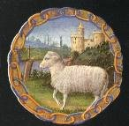
Le commencement de cette Science divine, c'est la crainte et le respect de Dieu [on l'a déjà dit à maintes reprises dans ce site : à chaque fois que les alchimistes font référence à Dieu, c'est du soufre ou de sulfates qu'ils parlent, en raison d'une assonance phonétique entre teion et teioV ; il s'agit là d'une cabale élémentaire. Il paraît incroyable que Jung dans son Psychologie et Alchimie -Buchet-Chastel, 1948- soit passé à côté de ce point alors que le traducteur a bien relevé ce point de cabale ] ; sa fin, c'est la charité et l'amour du prochain. La mine d'or [il s'agit d'or alchimique : ce n'est donc point le métal vulgaire mais le Soufre rouge dont il est fait état] qu'elle nous fait découvrir doit être employée à renter des temples et des établissements hospitaliers (xenodochiis) et à fonder des Messes, afin qu'hommage soit rendu à Dieu de ce qu'on tient de sa libéralité. On doit encore user de cette mine pour secourir sa patrie lorsqu'elle est victime de quelque calamité publique, racheter des prisonniers et des captifs, et soulager la misère des pauvres.
2
La connaissance et la lumière de cette science sont un don de Dieu [on retrouve cette expression chez tous les auteurs, y compris chez Fulcanelli et E. Canseliet : même remarque que précédemment], qu'il révèle par une grâce spéciale à qui lui plaît. Que personne donc n'embrasse cette étude s'il n'a le cœur pur, et si, dégagé de l'attachement aux choses de ce monde et de tout désir coupable, il ne s'est entièrement voué à Dieu [les alchimistes ont toujours dit que seul celui qui a déjà beaucoup d'or peut arriver à faire l'oeuvre, car il faut s'y consacrer à temps plein, nourrir son fourneau de façon continue, s'assurer d'aides, rassembler les matières premières, monter son laboratoire, se munir d'une bibliothèque conséquente renfermant les grandes oeuvres du passé, les traités de chimie anciens : Lemery, Glaser, Nicolas, etc., des traités sur les fourneaux].
3
La Science de faire la Pierre philosophale réclame une connaissance parfaite des opérations de la Nature et de l'Art concernant les métaux : sa pratique consiste à chercher les principes des métaux par résolution, et, une fois ces principes rendus beaucoup plus parfaits qu'ils ne l'étaient auparavant, à les rassembler derechef, afin qu'il en résulte une médecine universelle, (à la fois) très propre et très efficace à perfectionner les métaux imparfaits, et à rendre la santé au corps indisposé de quelque sorte de maladie que ce soit. [c'est le genre de phrases propres à semer la confusion chez ceux qui pénètrent pour la première fois un écrit alchimique ou qui cherchent à faire de l'or par tous les moyens. Voici, selon notre vision des choses, les correspondances à établir : les Adeptes disent qu'il faut savoir préparer la Pierre et l'Elixir. Ils veulent dire par là, d'une part les substances minérales propres à synthétiser la pierre à partir de deux éléments métalliques dont l'un est appelé Soufre blanc ou résine de l'or : c'est la Toyson d'or qui a fait l'objet de la légende des Argonautes ; l'autre se nomme le Soufre rouge et il s'agit d'un métal qui assure la tenture radicale de la Toyson. Quant à l'élixir, loin d'être l'élixir de longue vie, il s'agit tout bonnement du Mercure philosophique que l'on nomme aussi le bain des astres : c'est la fontaine du Trévisan ; Jean de Meung y a consacré un long poème qui s'appelle la Fontaine des Amoureux de science].
4
Ceux qui occupent un haut rang dans les charges et les honneurs, comme ceux qui sont continuellement embarrassés de leurs occupations particulières et nécessaires, ne doivent point prétendre à cette science. Elle veut l'homme tout entier, étant capable de le posséder à elle seule. Et certes, on ne songe plus à se lancer sérieusement dans des affaires de longue haleine, quand on y a pris goût : car elle fait mépriser comme fétu de paille tout ce qui n'est pas elle. [allusion au fumier et aux écuries où se forme le sel de Pierre, c'est-à-dire le nitre]
5
Que ceux qui entreprennent d'étudier cette doctrine se dépouillent de leurs mauvaises mœurs, et particulièrement qu'ils bannissent l'orgueil, qui est l'abomination du Ciel et la porte de l'Enfer ; qu'ils adressent à Dieu d'incessantes prières [il s'agit des sublimations philosophiques : Philalèthe y a consacré une bonne part de son Introïtus] ; qu'ils multiplient les actes de charité ; qu'ils s'attachent peu aux choses de ce monde ; qu'ils fuient la conversation des autres hommes [phrase rituelle pour consacrer le Mercure : c'est le serviteur fugitif de l'oeuvre et les conversations -discussorius- veulent aussi signifier les « choses résolvantes », c'est-à-dire dissolvantes : la Tourbe des philosophes, par exemple, traite du Mercure] ; et qu'ils s'appliquent à jouir d'une tranquillité d'esprit parfaite, afin que leur entendement puisse raisonner plus librement dans la solitude, et placer plus haut ses efforts, car s'ils ne sont éclairés d'un rayon de la lumière divine, ils ne pénétreront jamais les arcanes de la vérité de cette science.
6
Les Alchimistes qui n'appliquent leurs pensées qu'à de continuelles sublimations, distillations, résolutions, congélations : qu'à extraire de différentes manières les esprits et les élixirs, et à bien d'autres opérations plus subtiles qu'utiles, qui les engagent dans autant d'erreurs diverses, se mettent au supplice pour leur seul plaisir ; jamais ils ne feront réflexion par leur propre génie sur la simple voie qu'emprunte la Nature [revoyez notre section sur le Mercure de nature ; on y traite de l'art que prodigue la Nature pour faire les pierres précieuses], et jamais un rayon de Vérité ne viendra les éclairer et les guider. Cette trop laborieuse subtilité les écarte de la vérité, et submerge leur esprit dans des embarras, pareils aux Syrtes. Toute l'espérance qui leur reste, c'est de trouver un bon guide et un précepteur fidèle, qui, les ayant retirés de ces ténèbres, leur fasse apercevoir la pure clarté du Soleil de la vérité. [ces dernières réflexions trouvent leur parfait équivalent iconographique dans la gravure XLII de l'Atalanta fugiens de Michel Maier]
7
Un débutant en cette étude, s'il se sent doué d'un esprit clairvoyant, d'un jugement solide et arrêté, d'une inclination à l'étude de la philosophie, particulièrement à celle de la Physique ; s'il a, de plus, le cœur pur, les mœurs bonnes, et s'il est, en outre, étroitement uni à Dieu — même s'il n'est pas versé dans la Chimie — qu'il entre néanmoins dans la voie royale de la Nature, qu'il lise les livres des plus fameux auteurs en cette science, qu'il cherche un compagnon qui ait comme lui l'esprit juste et soit également porté d'inclination à l'étude, et ensuite, qu'il ne désespère point de réussir en son dessein. [l'esprit clairvoyant est le Mercure ; le jugement renvoie à Thémis, déesse de la justice, dont nous avons plusieurs fois parlé dans la section sur le Verbum du Trévisan et dans la section des Gardes du corps de François II]
8
Que celui qui recherche ce secret se garde bien de la lecture, et de la conversation des faux Philosophes. Car il n'y a rien de plus dangereux à ceux qui embrassent quelque science que le commerce d'un ignorant, ou d'un fourbe, qui veut faire passer pour des principes authentiques ses principes faux, par lesquels un esprit sincère et de bonne foi devient imbu d'une doctrine mauvaise. [la bonne foi, c'est le « bon aloi », renvoyant à un temple dédié à Saturne : aerarium]
9
Que celui qui aime la vérité ait peu de livres entre les mains, mais des meilleurs et des plus fidèles ; qu'il tienne pour suspect tout ce qui est facile à comprendre, particulièrement en ce qui concerne les noms qui sont mystérieux, et tout ce qui concerne les opérations secrètes. Car la vérité est cachée sous ces voiles, et jamais les Philosophes n'écrivent plus trompeusement que lorsqu'ils semblent écrire trop ouvertement, ni plus véritablement que lorsqu'ils cachent ce qu'ils veulent dire sous des termes obscurs. [On demeure perplexe quand on lit les historiens de l'Art sacerdotal : il semble bien que tant M. Berthelot, qu'E. Chevreul ou C.G. Jung aient pris à la lettre, tout ce que disent les alchimistes dans leurs textes]
10
Parmi les auteurs les plus célèbres qui ont écrit le plus subtilement, et le plus véridiquement, sur les secrets de la Nature et de la Philosophie occulte, Hermès (Trismégiste) et Morien [nous n'avons, hélas, pas encore trouvé le traité narrant les entretiens de Morienus au roi Calid ; d'aucuns considèrent que ce traité est fondamental] entre les Anciens, semblent à mon avis, tenir le premier rang ; parmi les nouveaux, Bernard le Trévisan [Verbum, Songe verd], et Raymond Lulle [Clavicule - Elucidation ; beaucoup de traités sont soit supposés, soit apocryphes], pour lequel j'ai une vénération plus grande que pour tous les autres car, ce que ce Docteur très subtil a omis, personne d'autre ne l'a dit. Que l'on explore donc, et qu'on lise souvent son Premier Testament, et aussi son Codicille, comme si l'on devait en retirer un legs de grande valeur. Qu'à ces deux volumes, on ajoute les deux Pratiques du même auteur, ouvrages dont on peut tirer tout ce que l'on désire, particulièrement l'authenticité de la matière (première), le degré du feu, et en général tout le régime pour l'accomplissement du Grand-Œuvre ; et c'est (précisément) ce en quoi les Anciens, dans le dessein de nous cacher le secret, ont été trop obscurs et trop réticents. Certes, on ne trouvera nulle part ailleurs démontrées plus fidèlement et plus clairement les causes cachées des choses, et les mouvements occultes de la Nature. Il traite peu, dans ses ouvrages, de l'eau première des Philosophes ; mais le peu qu'il dit de cette eau mystérieuse est très significatif.
11
Touchant donc cette eau limpide [c'est l'eau permanente ou Mercure philosophique] que beaucoup cherchent, et que peu rencontrent, bien qu'elle soit familière, s'offrant à tout le monde et servant à tout le monde, qui est la base de l'ouvrage philosophique, un gentilhomme Polonais anonyme, non moins plein d'érudition que de vivacité d'esprit, et dont le nom néanmoins a été indiqué par deux anagrammes qui en ont été faites, en a parlé dans sa Nouvelle Lumière Chimique, dans sa Parabole Enigmatique, et même dans son Traité du Soufre, assez au long et fort subtilement : il en a dit tout ce qui pouvait s'en dire, si clairement qu'on ne peut rien souhaiter de plus. [il s'agit de Sendivogius ou premier Cosmopolite. Seul le traité du Mercure contenant la Parabole énigmatique est de lui ; les traités du Soufre et du Sel sont apocryphes]
12
Les philosophes s'expriment plus librement et plus significativement par des caractères et des figures énigmatiques, comme par un langage muet, que par des paroles : témoin la table de Senior [Senior Zadith dont Fulcanelli pense que l'Azoth doit lui être attribué], les peintures allégoriques du Rosaire, et, dans Nicolas Flamel, les figures d'Abraham Juif [Abraham Juif n'a jamais existé ; le livre que décrit Flamel ou plutôt le pseudo-Flamel est absolument chimérique ; voyez les Fig. Hiér. à cet égard] ; et, parmi les œuvres modernes, les emblèmes secrets du très docte Michel Maier [Atalanta fugiens où figurent les gravures ple plus pénétrantes de l'art], dans lesquels les mystères des Anciens sont si clairement révélés et dévoilés qu'ils en sont comme des lunettes neuves [allusion à la gravure XLII], qui nous feraient paraître proche de nos yeux, et de la manière la plus lumineuse, la vérité antique et reculée par l'intervalle de plusieurs années.
13
Celui qui assure que le secret de la Pierre Philosophale surpasse les forces de la Nature et de l'Art, celui-là, dis-je, est entièrement aveugle, car il ignore le Soleil et la Lune. [phrase citée par E. Canseliet dans son Alchimie expliquée sur ses Textes classiques qu'il traduit de façon erronée par la Pierre de Nature ; mais peut-être s'agit-il d'une piste que le disciple de Fulcanelli a glissé furtivement ?]
14
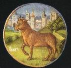
[Ce qui caractérise la matière des sages, de l'avis de tous les historiens de l'Art, c'est d'abord son ubiguité et son caractère protéiforme. Par exemple, Pernety -Fables- nous dit que jamais Mixte n'a eu tant de noms. Toutefois, les alchimistes s'accordent à dire qu'elle est Une et toute chose. Cela peut avoir, par cabale, son intérêt puisqu'une chose unique, en grec, se dit ion, très proche de ioV, rouille ou vert-de-gris, nommant par là des substances oxydées. Mais, ils l'appellent aussi or crud, or volatil, or immur, or lépreux. Nous savons que des métaux comme l'étain ou l'antimoine peuvent avoir des caractères qui les rapprochent des lésions lépreuses. voici ce que nous en dit Pernety :
« Cette matière première est aussi analogue aux métaux, étant le mercure dont ils sont composés. L'esprit de ce mercure est si congélant, qu'on le nomme le père des pierres tant précieuses que vulgaires. Il est la mère qui les conçoit, l'humide qui les nourrit, et la matière qui les fait. Les minéraux en sont aussi formés, et comme l'antimoine est le Prothée de la Chymie, et le minéral qui a le plus de propriétés et de vertus, Artéphius a nommé la matière du grand oeuvre, Antimoine des parties de Saturne. Mais quoiqu'elle donne un vrai mercure, il ne faut pas s'imaginer que ce mercure se tire de l'antimoine vulgaire, ni que ce soit le mercure commun. Philalèthe nous assure -Introïtus- que de quelque façon qu'on traite le mercure vulgaire, on n'en fera jamais le mercure philosophique. Le Cosmopolite dit que celui-ci est le vrai mercure, et que le mercure commun n'est que son frère bâtard - Dialogue du Mercure, de l'alchimiste et de la Nature, in Mercure, Ier Traité- . Lorsque le mercure des Sages est mêlé avec l'argent et l'or, il est appelé l'électre des philosophes, leur airain, leur laiton, leur cuivre, leur acier ; et dans les opérations, leur venin, leur arsenic, leur orpiment, leur plomb, leur laiton qu'il faut blanchir ; Saturne, Jupiter, Mars, Vénus, la Lune et le Soleil. »
Nous retiendrons ici : d'abord, la référence explicite aux pierres précieuses qui sont composées pour partie de ce mercure ; nous en avons parlé dans la section du Mercure de Nature. Ensuite, la forme particulière de cet antimoine dont devine bien qu'il est ce Protée hermétique par lequel est désignée une partie du mercure. L'électre des philosophes est un trait de cabale des plus raffinés. On sait, en effet, que l'électrum désignait jadis un amalgame fait d'or et d'argent. Exactement, l'électrum désigne l'asèm des Egyptiens : c'est un alliage d'or et d'argent -Chimie des Anciens ; Origines de l'alchimie, M. Berthelot- qui se trouve dans la nature et qui se produit aisément dans les traitements des minerais. Son nom a été traduit du grec ancien asemoV, qui désignait aussi l'argent sans marque. il était placé sous le patronage d'une divinité planétaire, Jupiter, qui, plus tard, on le sait, fut attribué à l'étain, vers le Ve siècle de notre ère. Cet alliage doit donc être superposé -par cabale- à l'airain dont les propriétés varient, nom qui comprenait à la fois notre cuivre rouge, et les bronzes et laitons d'aujourd'hui. Autre fait curieux : selon la manière dont il était traité, l'asèm pouvait fournir de l'or pur ou de l'argent pur, c'est-à-dire être changé en apparence en ces deux autres métaux. Enfin, l'asèm [électrum] pouvait être fabriqué artificiellement, en alliant l'or et l'argent entre eux, voire même sans or, et sans argent, par l'association d'autres métaux tels que le cuivre, l'étain, le zinc, le plomb, l'arsenic et le mercure, qui en faisaient varier la couleur et les propriétés. Pernety nous dit que l'amalgame philosophique était désigné sous le nom d'électre des philosophes. non seulement, cette expression évoque l'électrum ou asème égyptien, mais encore on peut lui trouver une correspondance dans les mythes. Electre est fille d'Océan et de Téthys. Téthys est le symbole de la fécondité des eaux tandis qu'Océan est la personnification divine de l'eau. On peut donc voir en Téthys, le principe générateur, celui qui va assurer la génération de la Pierre, stimulé par l'élément original]
Les philosophes, sous un langage varié, ont dit néanmoins la même chose en ce qui concerne la matière de cette Pierre ; de sorte que plusieurs, qui ne se ressemblent point en paroles, tombent d'accord cependant sur la chose elle-même. Leur façon de parler, pour être discordante, ne laisse pour autant aucune tache de fausseté ou d'ambiguïté à notre Science : vu qu'une même chose peut être exprimée en plusieurs langues, énoncée de diverses façons, représentée par des effigies différentes , et même, sous divers aspects, elle peut être nommée tantôt d'une façon, tantôt d'une autre.
15
Qu'on prenne donc garde à la signification diverse des mots. Car les Philosophes ont coutume d'expliquer leurs mystères par des détours trompeurs, et sous des termes douteux, et même le plus souvent, contradictoires en apparence, afin de protéger par des embarras et des voiles l'étude de ces vérités, mais non pour les falsifier ni pour les détruire. C'est pour cette raison que leurs écrits sont pleins de mots ambigus, dont le sens est équivoque. Certes, ils n'ont pas de plus grand soin que de dissimuler leur rameau d'or, qui est caché, comme dit le Poète, dans les retraites secrètes d'une sombre forêt, laquelle est toute environnée de vallons qui y font régner des ténèbres éternelles [c'est la même forêt de chênes séculaires que l'on voit représentés dans le De Lapide Philosophorum de Lambsprinck et la réflexion fait allusion à la Lumière sortant par soy-même des Ténèbres, ouvrage supposé de Crasselame, dont on a parlé dans la section sur l'humide radical métallique, à propos de la signification symbolique des comètes] ; et qui résiste à quelque force que ce soit. Il se laisse arracher seulement à celui qui pourra reconnaître les oiseaux maternels, et vers qui deux colombes, venant du ciel, dirigeront leur vol. [ces colombes de Diane sont analogues aux cygnes de B. Valentin. Le doute subsiste quant à leur sens véritable : s'agit-il des composants du Mercure ou plutôt des deux Soufres ? Il semble plutôt qu'il s'agisse des composants du Mercure, car B. Valentin assure qu'il faut « bayer un cygne à l'homme double igné »; or l'homme double igné est le Rebis, c'est-à-dire l'amalgame philosophique]
16
Celui qui cherche l'art de perfectionner et de multiplier les métaux imparfaits hors des métaux eux-mêmes, chemine dans l'erreur. Car il faut chercher dans la nature des métaux l'espèce métallique, comme dans l'homme celle de l'homme, et dans le bœuf celle du bœuf. [allusion au Taureau ; en mythologie, le taureau se retrouve en particulier dans la légende des Argonautes et dans les Travaux d'Hercule ; cf. section Gardes du corps et Fontenay pour les Douze travaux et cf. section chimie-alchimie pour le voyage des Argonautes]
17
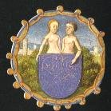
Il faut confesser que les métaux ne peuvent se multiplier par l'instinct et par les forces de la seule nature ; que, cependant, la vertu de multiplier est cachée dans la profondeur de leur substance ; et qu'elle est manifestée et mise en évidence par le secours de l'art, dont la nature a besoin en cet ouvrage. Car l'un et l'autre sont requis pour le mener à bien.
18
Les corps les plus parfaits sont doués aussi d'une semence plus parfaite ; ainsi, sous la dure écorce des métaux les plus parfaits est cachée également une semence plus parfaite. Si quelqu'un sait l'en tirer, il peut se vanter qu'il est dans le bon chemin : dans l'or est la semence de l'or, bien qu'elle soit cachée dans sa racine, et dans la profondeur de sa substance, plus fortement que dans les autres métaux. [il s'agit de l'humide radical métallique ; c'est la quintessence de Zozime. On y voit des oxydes ou chaux métalliques, totalement dissous dans le Mercure]
19
Quelques Philosophes ont dit que leur ouvrage était composé du Soleil et de la Lune seulement ; quelques autres ajoutent Mercure au Soleil, d'autres veulent que ce soit du soufre et du mercure ; quelques-uns soutiennent que le sel de la nature, mêlé aux deux derniers nommés, n'occupe pas un moindre rang dans l'œuvre. Or, tous ces Philosophes, bien qu'ils aient écrit que leur Pierre était produite, tantôt à partir d'une seule chose, tantôt de deux, de trois, de quatre ou de cinq, néanmoins dans leur langage divers n'ont tous qu'une même intention et qu'un même but. [de façon générale, le Soleil désigne le soufre rouge ; mais il peut aussi désigner Apollon ; comme on sait qu'Apollon est fils de Latone et soeur de Diane ; comme on sait aussi que Latone leur donna naissance à Délos, île surgie de l'abîme, on mesurera la difficulté de démêler l'entrelacs. Quant à la Lune, on en connaît trois : en son premier quartier, elle figure Diane aux cornes lunaires, c'est-à-dire le Mercure. Comme on l'a vu dans la section de l'humide radical métallique, Diane est formée du corps de Vénus et des deux cornes du croissant lunaire. Cette circonstance ne peut apparaître qu'au crépuscule du soir, là où Vénus prend le nom mythique de Vesper, à l'Occident. C'est le début du 3ème oeuvre. La Lune en son plein qui brille la nuit, au firmament, témoigne du travail hermétique de la Grande coction. Elle débute le soir, alors que le soleil est couché où elle apparaît alors à l'Orient et elle apparaît encore le lendemain, à l'Occident alors que le soleil se lève. Quant au dernier quartier de lune, il symbolise l'argent hermétique ou soufre blanc. Il apparaît au levant.]
20
Pour nous, afin de lever toutes ces embûches et ces pièges, et pour parler sincèrement de bonne foi, nous assurons que l'ouvrage entier s'accomplit parfaitement grâce à deux corps seulement, à savoir le Soleil et la Lune dûment préparés. Car la Nature effectue avec ces deux corps une véritable génération naturelle, avec le secours de l'art, par l'intervention de l'accouplement entre le mâle et la femelle, d'où procède une lignée beaucoup plus noble que ses parents.
21
Or il faut que ces (deux) corps soient vierges et non corrompus, vivants et animés, et non pas morts comme ceux dont le vulgaire se sert : car comment peut-on attendre la vie de choses mortes ! On appelle corrompues les choses qui ont déjà souffert la copulation, et mortes celles qui, martyrisées par la violence du feu, ce tyran du Monde, ont rendu l'âme avec le sang : fuis donc ce fratricide qui, dans toute la conduite de l'ouvrage, cause ordinairement de grands maux. [c'est tout le contraire qui doit être réalisé : les corps morts dont le « vulgaire » se sert sont des corps dégagés de leur gangue minérale. Les corps vivants et animés sont des chaux métalliques dissoutes, fluant au sein du Mercure qui est le vase de nature ; l'allégorie touchant l'âme et le tyran du monde relève du Soufre rouge qui représente l'âme et le tyran est vulcain, assimilé à Héphaïstos dont on a parlé dans l'Introïtus, VI]
22
Le Soleil est le mâle du Grand-Œuvre, car c'est lui qui donne la semence active et informante ; la Lune est la femelle, qui est aussi nommée la matrice et le vaisseau de la Nature, parce qu'elle reçoit en elle la semence du mâle, et la fomente au moyen de son menstrue [les deux Lunes dont on a a parlé sont ici mélangées ; la Lune dont parle d'Espagnet correspond au Mercure philosophique qui est un agent minéralisateur]. Néanmoins elle n'est pas entièrement privée de vertu active ; car c'est elle qui, la première, furieuse et aiguillonnée par l'amour, assaille le mâle, et se mêle avec lui, jusqu'à ce qu'elle ait satisfait ses amoureux désirs, et qu'elle en ait reçu la semence féconde : et elle ne se désiste pas de l'étreindre, jusqu'à ce qu'en étant engrossée, elle se retire tout doucement. [là, c'est davantage le Soufre blanc qui est évoqué et l'accrétion du Soufre rouge qui donne la Pierre naissante]
23
Par le nom de la Lune, les Philosophes n'entendent pas la Lune vulgaire, laquelle dans leur ouvrage est mâle, et fait dans l'accouplement la fonction de mâle. Qu'on ne soit pas malavisé au point de faire ainsi une alliance criminelle et contre nature de deux mâles et qu'on n'attende aucune lignée d'un tel accouplement. Mais que l'adepte joigne en un mariage légitime, avec la formule d'usage, Gabritius à Béia, le frère et la sœur, afin qu'il puisse en naître un glorieux fils du Soleil. [Dom Pernety, dans ses Fables Egyptiennes et Grecques en parle comme du mariage d'Isis et d'Osiris ; la Lune mâle correspond là au Soufre blanc]
24
Ceux qui disent que le soufre et le mercure sont la matière de la pierre, comprennent par le soufre le Soleil et la Lune vulgaire, et par le mercure la Lune des philosophes. Ainsi le pieux Lulle parlant sans fard et sans déguisement, conseille à son ami, de n'opérer pour l'argent qu'avec le Mercure et la Lune, et pour l'or, avec le Mercure et le Soleil. [c'est-à-dire pour l'opération des deux Soufres qui, infusés dans le Mercure, vont former le Rebis ou homme double igné]
25
Que l'on ne se trompe donc point, en ajoutant à deux un troisième, car l'amour ne souffre point de compagnon et de tiers, et le mariage s'accomplit seulement entre deux : l'amour que l'on cherche au-delà n'étant plus un mariage, mais un adultère. [il faut cependant un tiers que les bons auteurs nomment le lien du Mercure]
26
Néanmoins l'amour spirituel ne pollue point la virginité : Béia a donc pu sans crime, avant de donner sa foi à Gabritius, avoir contracté un amour spirituel, afin d'en devenir plus vigoureuse, plus blanche et plus propre aux choses du mariage.
La procréation des enfants est la fin d'un mariage légitime. Or, afin que l'enfant en naisse plus robuste et plus généreux, il faut que les deux époux soient nets de toute lèpre et de toute tache, avant que d'entrer dans le lit nuptial ; et il faut qu'il n'y ait en eux rien d'étranger ou de superflu, parce que d'une semence pure, procède une génération également pure. Par ce moyen, le chaste mariage du Soleil et de la Lune sera parfaitement bien consommé lorsqu'ils seront montés sur le lit d'amour, et qu'ils se seront mêlés. Celle-ci reçoit de son mari l'âme par ses caresses, et à l'issue de leur accouplement il naît un Roi très puissant, dont le père est le Soleil, et la Lune, la mère. [le Rosaire des Philosophes traduit très bien cette parturition singulière ; l'emblème initial de Limojon de Saint-Didier donne à voir le soleil et la Lune dardant leurs rayons sur le vase hermétique. Au pied de l'arbre alchimique, on voit très nettement deux sources distinctes qui ont leur origne dans les entrailles de la terre et qui assurent le feu aqueux ou l'eau ignée]
28
Celui qui cherche la teinture philosophique en dehors du Soleil et de la Lune, perd son huile et sa peine : car le Soleil fournit une teinture très abondante en rougeur, comme la Lune en blancheur. Ces deux corps sont les seuls que l'on nomme parfaits, parce qu'ils sont pleins de la substance d'un soufre très pur [le Soufre du soleil a été abordé de façon approfondie dans la section du soufre ; quant au Soufre de la Lune, voyez la section chimie-alchimie], parfaitement mondé par l'industrie ingénieuse de la nature. Teins donc ton mercure avec l'un ou l'autre de ces deux luminaires, car il est nécessaire qu'il soit teint au préalable, afin que lui-même puisse teindre.
29
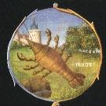
Les métaux parfaits contiennent en eux deux choses qu'ils peuvent communiquer aux imparfaits, à savoir la teinture et la fixation. Car pour autant qu'ils sont teints d'un soufre pur, c'est-à-dire d'un soufre blanc, et d'un (autre) rouge, et qu'ils sont fixés, autant leur teinture teint parfaitement, et ils fixent aussi parfaitement étant bien préparés avec leur propre soufre et leur propre arsenic. Autrement, ils n'ont pas la faculté de multiplier leur teinture.
30
Parmi les métaux parfaits, le mercure est le seul qui soit propre à recevoir la teinture du Soleil et de la Lune et à s'en imprégner, dans l'ouvrage de la Pierre philosophale ; afin qu'en étant pleinement imbus, ils puissent teindre suffisamment les autres métaux. Néanmoins, il doit être au préalable imprégné et pénétré de leur soufre invisible, afin d'être plus abondamment imbu de la teinture visible de ces corps parfaits, et qu'il puisse la communiquer avec usure. [ce passage de D'Espagnet n'est pas traduisible en langage clair ; il semble que là il fasse appel à la doctrine hermétique classique basée sur la teinture des métaux, au principe de teinture. Nous ne pouvons adhérer à ce qu'il dit]
31
Cependant, la foule des philosophes transpire et se torture à extraire la teinture de l'or lui-même. En effet, ils croient que la teinture se sépare du Soleil, et qu'une fois séparée, on peut en augmenter les vertus : mais " enfin l'espérance trompe les laboureurs avec des épis vides " . [par pure analogie, on peut donner l'exemple du corindon : c'est de l'alumine pure, une sorte d'écrin sans bijou ; il peut donner de l'émeri ou un rubis...]
Car il ne peut se faire que la teinture du Soleil se sépare aucunement de son corps naturel, à cause de la perfection de celui-ci —, nul corps élémentaire plus parfait que l'or n'ayant été façonné par la nature —, laquelle procède de l'union forte et inséparable de son soufre tant pur que teignant avec son mercure, l'un et l'autre étant pour cela parfaitement préparés par la nature, qui ne permet pas que l'art puisse les séparer d'une vraie séparation. Si l'on tire par la violence du feu, ou celle des eaux corrosives, un peu de liqueur permanente du Soleil, il faut croire que l'on obtient une portion de son corps liquéfié par force, et non la séparation de la teinture. Car toute teinture suit son corps, et ne s'en sépare jamais. C'est là une illusion de l'art inconnue aux artisans eux-mêmes.
32
Même si l'on accorde que la teinture est séparable de son corps, il faut avouer cependant que cette séparation ne peut pas s'opérer sans la corruption du corps lui-même, et celle de la teinture ; vu que l'on violente l'or ou bien par le feu de fusion, ce destructeur de la Nature, ou bien par les eaux fortes, qui rongent plutôt qu'elles ne dissolvent. C'est pourquoi il faut nécessairement que le corps dépouillé de sa teinture et de sa toison d'or [la différence est bien faite entre la teinture, qui équivaut à l'Âme et la toison d'or qui représente le Corps, littéralement, ce qui porte l'or : cristojoroV] devienne en quelque sorte une chose vile et comme un poids inutile pour le désespoir de l'artisan, sa teinture toute corrompue ayant moins de force pour opérer.
33
Que ces philosophes-là jettent donc leur teinture dans le mercure, ou dans n'importe quel autre corps imparfait, et qu'ils les unissent aussi étroitement que les forces de l'art le permettent, ils seront cependant par deux fois frustrés de leur espoir : d'abord parce qu'ils expérimenteront que cette teinture ne pénétrera ni ne teindra ce corps, ce qui serait au-dessus des forces et du poids de la nature [cf. section du Mercure de nature] ; ce pourquoi, ils ne recevront par ce moyen aucun gain dont ils puissent réparer la dépense et l'abjection du corps ainsi dépouillé. Ainsi que le dit le proverbe : " la pauvreté mortelle croît lorsque le travail est à perte ". De plus cette teinture étrangère appliquée à un corps étranger ne lui donnera pas la fixation et la permanence parfaites nécessaires à ce qu'il puisse soutenir la touche, et résister à l'épreuve de Saturne.
34
Qu'ils changent donc tout de suite de route, et qu'ils ménagent mieux leur temps et leur dépense, les étudiants de l'alchimie qui se sont laissés mener jusqu'à présent par les vagabonds et les imposteurs ; qu'ils s'appliquent avec zèle à un ouvrage vraiment philosophique, afin qu'ils ne soient point sages trop tard comme les Phrygiens, et ne soient point forcés de s'exclamer avec le Prophète (Osée, VII) : " des étrangers ont dévoré le fruit de ma force ". [le thème du vagabond est utilisé dans la cabale hermétique pour désigner le Mercure. L'allégorie mythologique qui s'y réfère semble celle où Lycaon est changé en loup par Zeus -Ovide, M., I, VI. : Lycaon était réputé pour son impiété. Zeus décida de lui rendre visite sous l'apparence d'un pauvre paysan. Lycaon, pour savoir si cet étranger était un dieu, lui servit un repas mélangé de chair humaine. Zeus, indigné, changea en loup Lycaon. Cet épisode précipita le Déluge qui forme la fable VII]
Plus de travail et plus de temps s'emploient dans l'Œuvre philosophique qu'il ne s'y fait de dépenses. Car il reste peu de frais à soutenir à celui qui possède la matière convenable. C'est pourquoi ceux qui tâchent d'accaparer de grandes sommes d'argent, et placent dans les dépenses le plus difficile secret de l'Œuvre, montrent plus de confiance en la bourse d'autrui qu'en leur savoir propre. Que l'apprenti trop crédule se garde donc de ces voleurs, car lorsqu'ils promettent des montagnes d'or, ils ne font que des embûches à votre or : ils réclament qu'un Soleil marche devant eux, parce qu'eux-mêmes déambulent dans les ténèbres.
36
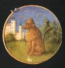
De même que ceux qui naviguent entre Charybde et Scylla risquent le naufrage aussi bien ici que là [allusion au voyage des Argonautes, entièrement hermétique d'après Dom Pernety], de même ils ne sont pas menacés d'un moindre péril ceux qui, aspirant à la conquête de la Toison d'or, flottent entre les équivoques du soufre et du mercure des Philosophes, ces deux écueils. Les plus perspicaces, par la lecture assidue des auteurs les plus graves et les plus sincères, et par la lumière d'un rayon du Soleil, ont acquis la connaissance du soufre, mais ils sont restés suspendus au seuil du mercure des Philosophes. Car les auteurs en ont parlé avec tant de détours et de méandres, et l'ont appelé de tant de noms ambigus, qu'on le découvre plutôt par une impétuosité d'esprit, et sans y penser, que lorsqu'on le cherche à force de raison et de sueur.
37
Pour immerger plus profondément leur mercure dans les ténèbres, les philosophes l'ont fait multiple, et en chaque partie et chaque régime du Grand Œuvre ils apportent le mercure, qui cependant est toujours différent. Ainsi n'en obtiendra jamais la connaissance parfaite quiconque ignorera l'une des parties de l'Œuvre.
38
Les philosophes ont reconnu principalement trois sortes de mercure : à savoir, après que soit accomplie la préparation du premier degré, et la sublimation philosophique, ils appellent alors cette matière leur mercure ou mercure sublimé. [Ici, tout dépend de ce que l'on entend par sublimation philosophique. Il y a plusieurs sublimations dans l'oeuvre, c'est-à-dire des moments où un composé se détache d'une masse : il peut s'en détacher soit par en haut ou par en bas ; en haut, là encore deux solutions : ou il surnage le composé, par exemple, le carbonate de soude, où il se sublime réellement, par exemple, l'eau forte ou le zinc. Par en bas, soit il s'agit d'une cohobation auquel cas le corps s'est déjà sublimé et il peut être cohobé de façon successive -c'est une circulation- soit il y a précipitation, par exemple, de l'alun. D'après ce que nous en savons par la voie sèche, la 1ère sublimation correspond à la préparation de l'aqua sicca qui laisse au fond de la cornue un résidu réputé de nulle valeur : c'est l'arcanum duplicatum].
39
Secondement, dans la seconde préparation, que les auteurs nomment la première (parce qu'ils omettent la première), le Soleil étant redevenu cru, et, dissous en sa première matière, ils appellent cette matière ainsi crue ou dissoute, le mercure des corps, ou des Philosophes. Alors cette matière s'appelle (aussi) Rebis ou Chaos, ou Monde entier, parce que tout ce qui est nécessaire pour l'œuvre s'y trouve et qu'elle suffit seule pour faire la pierre philosophale. [dire que le soleil a été réincrudé, c'est dire qu'il a subi une dissolution radicale ; il s'agit d'une chaux métallique dissoute : c'est donc un oxyde. Mais la substance ainsi préparée ne doit pas être utilisée en tant que telle ; elle doit être incorporée au Mercure d'abord sous forme de sulfate qui, dans un temps ultérieur, se transformera en oxyde, lequel cristallisera ; voilà ce que nous pouvons dire dans l'état actuel des supputations]
40
Enfin ils appellent quelquefois mercure des Philosophes, l'élixir parfait et la médecine teignante, quoique de manière impropre, car le nom de mercure ne convient qu'à ce qui est volatil (c'est pourquoi tout ce qui se sublime à quelque stade de l'ouvrage que ce soit, ils l'appellent aussi mercure) : mais l'élixir, parce qu'il est très fixe, ne doit pas être appelé du simple nom de mercure. Aussi l'ont-ils appelé leur mercure, à la différence du volatil. La voie droite pour étudier et discerner tant de mercures des Philosophes ne se montre vraiment qu'à ceux-là, " que chérit le juste Jupiter, ou qu'une ardente vertu a élevés jusqu'aux deux ". [quant à l'élixir, il s'agit comme nous l'avons dit plus haut du Mercure philosophique dans lequel le Rebis a été infusé sous la forme des Soufres b lanc et rouge. l'allusion à Jupiter peut être de deux ordres : a)- allusion à la rosée de mai ; b)- allusion au sel d'Ammon, lui-même pouvant être soit du carbonate d'ammoniaque, soit de la silice. Dans le cas a)- il est question du dissolvant -cf. section des Gardes du corps- dans le cas b)- il doit s'agir de silice. Nous ne savons pas à quoi pourrait bien servir l'ammoniaque dans l'oeuvre]
41
L'élixir s'appelle mercure des Philosophes, à cause de sa ressemblance et de sa grande conformité avec le mercure céleste ; car celui-ci, bien que privé des qualités élémentaires, est néanmoins très propre à les influer : ce Protée versatile emprunte et accroît la nature et le génie des diverses planètes, à raison de l'opposition, de la conjonction, ou de l'aspect.
[voici qui nous ramène immédiatement à l'humide radical métallique et à la valse céleste des couleurs. De ce Protée, nous parlons dans la section du Soufre ; E. Canseliet en donne même une image dans son Alchimie. Marc-Antoine Gaudin s'y réfère en nommant le cuivre, d'où l'on peut tirer, dit-il, une infinité de couleurs. Dans son étude sur Newton [Fondements], B.J. Dobbs pense que les expériences d'Isaac Newton et d'Henri Moore, par voie humide, ont conduit à des composés semi-métalliques, à coloration irisée. Toutefois, nous ne voyons toujours pas l'intérêt de la voie humide. Des conditions de pression trop fortes pour des matras scellés, même de forte épaisseur, interdisent son emploi dans les synthèses cristallines. G. Ranque s'est penché sur la voie humide et il est formel. Seuls, deux chlorures peuvent se sublimer à une température de 500°C : d'une part le bichlorure de mercure, autrement appelé chlorure mercurique, sublimé vénitien ou sublimé corrosif ; d'autre part le trichlorure d'antimoine. ]
L'élixir ambigu opère de même, car n'ayant aucune qualité particulière, il embrasse la qualité et la nature de la chose à laquelle il se mêle, et en multiplie les vertus et les qualités d'une façon merveilleuse.42
Dans la sublimation philosophique du mercure, ou première préparation, un travail d'Hercule incombe (aussitôt) à celui qui travaille. En effet, sans Alcide, Jason eût tenté en vain son expédition en Colchide ; " A l'un des princes de montrer la toison dorée du célèbre bélier, comme s'il pouvait l'enlever ; à l'autre de soulever un tel fardeau ! " [le travail d'Hercule consiste en la préparation de la première matière par la séparation initiale. Mais quelle est cette première matière, par quel agent l'obtient-on, de quel type de séparation s'agit-il ? Dans l'optique de notre système, la séparation initiale consiste à préparer du tartre vitriolé à partir d'un sel de potasse et d'un vitriol. Par sel de potasse, on peut entendre alkali fixe, huile de tartre faite par défaillance, salpêtre. Par vitriol, on peut entendre celui de Chypre ou vitriol bleu -couperose- ou celui d'Allemagne -vitriol vert ou calciné en blancheur ou encore vitriol blanc -sulfate de zinc. On peut encore utiliser des équivalents vitrioliques : alun ou gypse qui sont des isotopes spirituels par cabale : ils fournissent tous deux de l'acide vitriolique. Les vitriols sont placés sous la domination d'Arès et les composés de la potasse, sous celle de Vénus-Aphrodite. Encore faut-il ici faire la différence entre Vesper, l'étoile du soir et Lucifer, l'étoile du matin. Enfin, faut-il connaître la période propice pour conjoindre ces deux principes : c'est là que Diane aux cornes lunaires doit se montrer indulgente pour l'artiste en lui indiquant le bon chemin. Il n'aura qu'à la suivre à la trace, le long de ce chemin bourbeux, bien traduit dans l'emblème XLII de l'Atalanta fugiens. Alcide est cité dans les inscriptions de la porte alchimique de la villa Palombara, à Rome.I. LE DRAGON GARDE L'ENTRÉE DU JARDIN MAGIQUE d'HESPERUS ET SANS ALCIDE JASON N'EÛT PAS GOUTÉ LES DÉLICES DE COLCHIDE. ]
Car le seuil est gardé par des bêtes à cornes furieuses, qui écartent, non sans dommage, ceux qui s'approchent témérairement. Seuls les insignes de Diane, et les colombes de Vénus adouciront leur férocité, si les destins t'y appellent. [c'est une paraphrase de l'Introïtus, VI de Philalèthe. Philalèthe, dont le texte est postérieur à l'Oeuvre, a donc emprunté à D'Espagnet l'allégorie des colombes de Diane. Les bêtes à cornes furieuses sont bien sûr des taureaux ; Arès est leur équivalent ou même le sanglier de Calidon. La légende raconte qu'Arès, furieux qu'Adonis ait séduit Aphrodite, s'était transformé en sanglier et avait culbuté Adonis ; cf. le rébus de St-Grégoire. Ce passage permet de mieux mettre en relief le problème de l'interprétation des colombes de Diane. il est clair qu'ici, ces colombes sont rapportées à Vénus ; il s'agit donc de composés qui contiennent un sel de potasse et le résultat de la préparation voilée par l'action de ces colombe masque peut-être la préparation de l'alkali fixe ; cf. sections sur le bain des astres. Les insignes de Diane, les cornes lunaires, symboliseraient alors ce résultat : faites réagir une base -alkali fixe- avec un acide -l'acide vitriolique : vous tempérerez immédiatement la férocité de la bête furieuse. Ainsi donc, cette bête furieuse peut trouver son équivalent dans le dragon qui garde le seuil de l'entrée des Hespérides].
43
Le Poète semble avoir voulu décrire la qualité naturelle de la terre philosophique et la manière de la cultiver, lorsqu'il chante " un sol gras que de forts taureaux retournent aussitôt, dès les premiers mois de l'année " et " la glèbe désagrégée qui se dissout grâce au zéphyr ". [ce sol gras, c'est la chaux qui l'a amendée et ces taureaux évoquent Vénus-Aphrodite, c'est-à-dire ce sel contenant du potassium. Quant à la glèbe -gleba- c'est d'une terre bien particulière qu'il est question : une motte de terre ? quelque bloc de marbre peut-être ?...Alors, les taureaux voilent l'agent capable de dissoudre cette terre ; en ce cas, ces taureaux fougueux se rapporteraient à Arès ou en tout cas à une époque où le soleil pénètre dans cette zone du zodiaque que montre le bel emblème de Limojon de Saint-Didier. En grec, la glèbe -corion- évoque plutôt le fonds de terrain et au plan hermétique le terrain qu'il faut préparer pour y faire pousser le Soufre]
Celui qui désignera la Lune des philosophes ou le mercure des Philosophes comme étant le mercure vulgaire, ou bien trompe sciemment (autrui), ou bien se trompe lui-même. En effet Geber nous enseigne que le mercure des Philosophes est bien en vérité un vif-argent, non cependant le vulgaire, mais celui qui en est extrait par le savoir philosophique. [c'est l'argent-vif]
45
L'expérience confirme l'opinion des plus graves philosophes, selon laquelle leur mercure n'est pas dans toute sa nature et dans toute sa substance le vif-argent vulgaire, mais qu'il en est l'essence la plus centrale et la plus pure qui puisse en tirer son origine, et être créée à partir de lui. [peut-être est-ce une allusion au fait que le mercure vulgaire est le seul métal à être liquide à la température ordinaire]
On nomme le mercure des Philosophes de différents noms ; tantôt on l'appelle terre, tantôt on l'appelle eau, pour divers motifs, et surtout parce qu'il est composé naturellement de l'une et de l'autre. Cette terre est subtile, blanche, sulfureuse : les éléments y sont fixes et l'or philosophique y est à l'état de semence. Tandis que l'eau est une eau-de-vie, c'est-à-dire ardente, permanente, extrêmement limpide, qu'on appelle aussi eau de l'or et de l'argent. Le mercure dont il est question ici, parce qu'il contient encore son soufre, qui se multiplie par le moyen de l'art, peut aussi s'appeler soufre de vif-argent. Enfin cette substance si précieuse est la Vénus des anciens, l'hermaphrodite douée des deux sexes. [ici est désigné le Rebis, c'est-à-dire l'amalgame philosophique. On connaît en outre deux Vénus, selon que le crépuscule est du matin -Lucifer, désignant la terre damnée- ou du soir et c'est Vesper ; l'artiste fera bien alors de vérifier dans quelle phase est sa Lune]
47
Le vif-argent est en partie naturel, et en partie artificiel : sa part intrinsèque et occulte a sa racine dans la nature, et ne se peut tirer que par une purification préalable, et une sublimation faite avec science [la part occulte du Mercure, préparé pour la voie sèche, passe par l'examen du calendrier de l'artiste : en février, il prépare sa terre, en mars il taille ses vignes, en octobre il foule son raisin]. La part intrinsèque est étrangère à la nature et accidentelle [elle résulte du choc de deux mondes, séparés par la terre]. Sépare donc le pur de l'impur, la substance des accidents, et rends manifeste ce qui était caché par les voies de la nature, ou bien désiste-toi entièrement. Car tel est le premier fondement de l'art et de tout l'ouvrage.
[Sur le pur et l'impur, voici cet extrait du Cours de Chymie de Lefèvre : «...nous entendrons par le pur, tout ce qui dans le mixte peut servir à notre but et à notre dessein : comme au contraire, nous entendrons par l'impur, tout ce qui s'oppose à notre intention. [...] Voici donc la différence qui est entre l'un et l'autre de ces impurs, c'est que celui du dedans agit immédiatement par sa présence, et que l'autre n'est considéré que comme absent, qui cependant doit être présent quelque jour ; parce que, comme l'homme a nécessairement besoin de respirer et de se nourrir ; aussi ne peut-il échapper l'action de l'impur, qui se rencontre dans l'air et dans les aliments, comme nous le ferons voir ci-après ; de sorte que nous montrerons que ce que quelques-uns appellent le pur, contient encore néanmoins en soi beaucoup d'impuretés. [...] il est facile d'entendre ce que c'est proprement que l'impur : ce sont des principes de différente nature, qui sont mêlés avec d'autres principes qui ne sont pas de leur famille, ni de leur catégorie : comme lorsque les minéraux s'unifient en quelque façon avec les animaux, ou avec les végétaux. [...] il y a deux voies pour chasser l'impur de toutes les choses. La première est universelle, et l'autre est particulière.
- La première est une médecine universelle qui se tire, ou qui se peut tirer de plusieurs sujets, après les avoir réduits, autant qu'il est possible à l'air, à leur universalité, après leur avoir ôté leur spécification et leur fermentation naturelle, qui les avait fait être un tel ou tel mixte déterminé ; car dès que cette médecine est réduite au plus haut degré de son exaltation, par une digestion, par une coction et par une maturation requise ; elle est capable de faire sortir l'impur de tous les corps indifféremment, parce qu'elle consume insensiblement cet impur, tant par le moyen de la fixation, que par celui de la volatilisation.
- La seconde, est une médecine particulière, qui peut chasser par sa faculté et par sa vertu spécifique, une impureté particulière : ce qui n'est pourtant pas de peu d'importance, puisque ces secrets ne se trouvent que par ceux qui mettent la main à l'oeuvre, et qui joignent un travail continuel à une étude sans relâche ; qui raisonnent sur les choses après les avoir faites [...]
48Cette liqueur sèche et très précieuse constitue l'humide radical des métaux ; c'est pourquoi quelques anciens l'ont appelée verre. Car le verre se tire de l'humide radical, qui adhère opiniâtrement aux cendres des choses et qui ne cède qu'à la violence d'un feu extrême ; cependant notre mercure naturel et central se manifeste grâce au feu très bénin, quoique assez long de la nature. [Fulcanelli n'a-t-il pas assuré que tout l'art est résumé dans celui de faire du verre ? il faudrait alors examiner de près de quelle façon tourne le verre quand on le soumet à la torture de Vulcain]
49
Les uns par la calcination, les autres par la sublimation, quelques-uns par le moyen de vases vitrifiants, d'autres d'entre le vitriol et le sel, comme d'entre ses vaisseaux naturels, ont voulu obtenir la terre philosophique et latente. D'autres ont enseigné qu'il fallait sublimer la chaux et le verre (dans le même but). [D'Espagnet se montre ici bien charitable ; Fulcanelli a en effet dit que le feu des sages était de la nature de la chaux. Mais de quelle chaux s'agit-il ? Il faut distinguer la chaux telle que nous l'avons étudiée dans la section compendium de la chaux métallique [1, 2] qui est un métal brûlé. De ces deux acceptions, laquelle est la bonne ?]
Mais nous, nous avons appris de la bouche du Prophète que Dieu au commencement créa le ciel et la terre, que la terre était stérile et déserte, que les ténèbres étaient sur la face de l'abîme et que l'esprit de Dieu était porté au-dessus des eaux ; et que Dieu dit que la lumière soit, et que la lumière fut ; et que Dieu vit la lumière, qui était bonne et qu'il sépara la lumière des ténèbres, etc. La bénédiction qui fut donnée à Joseph, rapportée par le même Prophète J, ce sera assez pour le sage : sa terre tirera sa bénédiction de Dieu, elle devra l'hommage de sa fécondité aux fruits du ciel, à la rosée, et aux eaux de l'abîme ; c'est aux fruits du Soleil et de la Lune, aux sommets des montagnes antiques, aux fruits des collines éternelles qu'elle rendra tribut. Prie donc Dieu de tout ton cœur, mon fils, afin qu'il te donne une portion de cette terre bénie. [c'est sous des dehors poétiques que D'Espagnet traite des attributs de l'artiste, car cette terre qui tire sa bénédiction de Dieu ne peut être qu'un sulfate ou un sulfure ; sa préparation par la rosée de mai -dissolvant- et par les fruits du Tartare ; la couleur des chaux métalliques indiquées par le sommet de la colline, tout concourt à donner des indices sûrs à l'étudiant]
50
Le vif-argent est tellement infecté par le défaut et le vice de son origine, qu'il en garde deux traces remarquables : la première, il l'a contractée par l'impureté de la terre qui s'est mêlée à sa génération, et qui continue à y adhérer par la congélation. L'autre, pareille à une hydropisie, est une maladie d'eau entre chair et cuir, qui provient d'une eau grasse et impure mélangée à la limpide, et que la nature n'a pas pu épuiser et séparer par contraction : cependant parce qu'elle est étrangère elle s'évapore à la moindre chaleur. Cette lèpre qui infeste le corps du mercure ne gît ni dans sa racine, ni dans sa substance, mais elle est accidentelle [il y a ici peut-être un trait de cabale ; D'Espagnet comme Philalèthe nous disent qu'une lèpre infeste le mercure par accident, c'est-à-dire par hasard ; or le hasard, en grec se dit tuch, homonyme de tuke, pierre de taille, c'est-à-dire de pierre calcaire. Il y a là quelque chose à creuser] : c'est pour cela qu'elle s'en sépare facilement. L'imperfection terrestre s'en va grâce à un bain et à un lavage humide. [lixiviation] L'imperfection aqueuse s'en va grâce à un bain sec, avec le secours du feu bénin de la génération. Ainsi par une triple ablution et purgation, le dragon [la première matière, à différencier de la prima materia qui, en fait, s'avère être un leurre. Il y a au moins trois minéraux à employer au début de l'oeuvre : l'un est un vitriol, l'autre un sel contenant du potassium et le 3ème, du marbre statuaire] dépouillé de ses écailles anciennes et de sa peau rugueuse se renouvelle.
51
La sublimation philosophique du mercure s'accomplit par deux moyens, en faisant sortir ce qui est superflu, et en faisant entrer ce qui manquait ; les choses superflues sont les accidents externes qui voilent l'étincelant Jupiter de la sombre sphère de Saturne. Ote donc cette écorce livide de Saturne, jusqu'à ce que l'astre pourpre de Jupiter brille à tes yeux [pour Dom Pernéty -Fables-, la couleur de Jupiter est grise et elle succède à la noirceur ; le symbolisme s'accorde donc à peu près ici]. Ajoutes-y le soufre de la nature, dont le mercure possède déjà un grain, et comme un ferment, dont il contient autant qu'il lui en faut : mais fais aussi en sorte qu'il y en ait autant qu'il en faut pour les autres. Multiplie donc ce soufre invisible des philosophes, jusqu'à ce que le lait de la Vierge
[Saint-Thomas d'Aquin nous dit ce qu'est le lait de vierge des alchimistes : il se prépare en faisant dissoudre de la litharge dans du vinaigre et en traitant la solution par le sel alcalin (alkali fixe), Tractatus sextus de esse et essentia mineralium tractans, Theatr. Chem., vol. V. Fulcanelli parle aussi de ce lait de vierge à propos des fontaines :
«... La mythologie l'appelle Libéthra et nous raconte que c'était une fontaine de Magnésie, laquelle avait, dans son voisinage, une autre source nommée la Roche. Toutes deux sortaient d'une grosse roche dont la figure imitait le sein d'une femme ; de sorte que l'eau semblait couler de deux mamelles comme du lait...cette magnésie est dite Lait de vierge...»
Pour bien déjouer la difficulté, nous dirons que la marne contient du calcaire terreux et est congénère de deux substances, l'agaric minéral et de la farine fossile : composées exclusivement l'une et l'autre de chaux carbonatée friable, elles doivent être associées au calcaire terreux. La 1ère est désignée sous le nom de moelle de pierre et de lait de montagne ; on voit par là le rapport étroit qui assure la liaison, au plan hermétique, entre cette farine et le lait de vierge que Fulcanelli évoque. Le Trévisan évoque à son tour ce lait de vierge :
«...Mais l'Enfant à la puissance de se soutenir soi-même ; et comme il est encore de nature simple, il convient de le nourrir d'un petit lait gras, à savoir de son Humidité vivifiante, de laquelle en partie il a été engendré et qui est notre Eau permanente, Lait de Vierge, ou Eau de vie qui ne vient point de la vigne, et néanmoins elle est dite Eau de vie, parce qu'elle vivifie notre Pierre et la fait ressusciter. Verbum»
Salomon Trismosin se risque à son tour à une improvisation sur cette substance mystérieuse dans la Toyson d'or :
«...Ce soufre ainsi réduit surpasse en excellence tous les prix et les valeurs qu'on lui saurait donner, aussi l'ont-ils grandement prisé et qualifié d'un éloge d'honneur, quand ils lui ont prérogativement attribué le rare nom de lait de vierge ou de pucelle, lac virginum, qui revient aucunement à la forme de quelque gomme rouge, toute d'or, et ressemblant à l'eau des Philosophes, très resplendissante, qu'il faut coaguler, communément appelée des Sages tinctura Sapientiae, teinture admirable de Sapience, ou le feu vif des couleurs permanentes, une âme et un esprit qui s'étend loin par sa vertu se rendant volatil, ou se retire et restreint quand il lui plaît, d'une teinture fixe dans ses individus, c'est-à-dire dans sa nature propre et homogénéisée. Toyson »]
en soit exprimé : alors s'ouvre à toi la première porte.
52
Un dragon digne des Hespérides garde la porte du jardin des Philosophes, à l'entrée duquel une fontaine d'une eau très limpide, jaillissant de sept fissures, s'épanche tout autour. Il faut faire boire le dragon dans cette fontaine jusqu'au nombre magique de trois fois sept, et il faut le faire boire jusqu'à ce que, devenu ivre, il se dépouille de sa peau écailleuse : puissent être propices les divinités de Vénus lumineuse et de Diane cornue. [Ici sont mêlées deux allégories très connues ; d'abord le dragon des Hespérides : cette fable est inséparable des Douze travaux d'Hercule. Instruit par Nérée et Prométhée, Hercule doit combatte le dragon qui se présente à l'entrée du Jardin des Hespérides. Il tue cet animal qui tombe en putréfaction. L'allusion, ainsi que le rapporte Dom Pernety -Fables- suppose que ce dragon qui symbolise la prima materia soit le signe de la noirceur, suite de la corruption, et considérée comme la clef de l'oeuvre. ainsi s'exprime Synésius :
« Quand notre matière, Hylec commence à ne plus monter et descendre, qu'elle tient de la substance fumeuse et putréfiée, elle devient ténébreuse, ce qui s'appelle robe noire ou tête de corbeau. Cela fait aussi qu'il n'y a que deux éléments formels en notre pierre, savoir la terre et l'eau ; mais la terre contient en sa substance la vertu et la siccité du feu ; et l'eau comprend l'air avec son humidité. Remarquez que la noirceur est le signe de la putréfaction -que nous appelons Saturne- ; et que le commencement de la dissolution est le signe de la conjonction des deux matières...Or, mon fils, vous avez déjà, par la grâce de Dieu, un élément de notre pierre, qui est la tête noire, la tête de corbeau, qui est le fondement et la clef de tout le magistère, sans lesquels vous ne réussirez jamais. » [De l'Oeuvre des sages] ;
l'allusion aux chiffres 3 et 7 a été analysée dans la section des Gardes du corps. C'est du Mercure philosophique qu'il est bien sûr question, en raison de l'allusion à Diane aux cornes lunaires et à Vénus]
Trois espèces de très belles fleurs doivent être cherchées et trouvées au fond de ce jardin des philosophes : des violettes rouge vif, un lys blanc et l'amarante pourpre et immortelle. [les violettes sont une allusion aux chaux métalliques, par le truchement d'une assonance phonétique entre les mot ion, désignant la violette ainsi d'ailleurs que la couleur violet sombre -par laquelle on sort de la putréfaction- qui évoque aussi les roches Cyanées ou symplégades à la sortie du Pont-Euxin et le mot ioV signifiant javelot à Sagittaire, Artémis, arc et venin et aussi rouille et vert-de-gris. Le lys blanc, outre la couleur blanche désignant celle qui doit succéder à la noire, est évoqué à de nombreuses reprises dans le corpus alchimique et même au-delà, dans un contexte poétique. Par exemple, Goethe dans Faust, en parle, et dans une acception évidemment alchimique :
« Mon père était un obscur honnête homme qui, de bonne foi, raisonnait à sa manière sur la nature et ses divins secrets. Il avait coutume de s'enfermer avec une société d'adeptes, dans une sombre cuisine où, d'après d'interminables recettes, ils fondaient ensemble des substances contraires. C'était un lion rouge, un hardi compagnon qu'y unissait au lys dans un bain tiède. Puis tous deux, soumis à feu ouvert passaient d'une torture à l'autre dans leurs chambres nuptiales. Apparaissait alors, dans un verre, la jeune reine aux vues couleurs. » Faust, 1ère partie, v. 1304.
Salomon Trismosin évoque aussi cette fleur dans la Toyson d'or :« C'est une chose admirable que de considérer les belles fonctions et les nobles factions de cet esprit mercuriel, lequel si tu viens à jeter par-dessus les trois autres défaillants, il porte aide et secours au blanc, et par-dessus le citrin et le rouge, il le rend aussi parfaitement blanc qu'une couleur de lys ou argentine, puis il aide et donne couleur au rouge par-dessus le citrin, le rendant comme albâtre. » Toyson. Le lys ou lis se dit en grec krinon qui a aussi le sens de mendiant ou de pauvre ; par ailleurs krinon est en proche assonance phonétique de krinw qui signifie séparer ; on voit ainsi pourquoi les alchimistes disent que la voie sèche a été réservée pour les pauvres et la nécessité de pratiquer une séparation au début du travail, afin d'extraire le Caput. Dans la même optique, on peut citer le Théâtre de l'Astronomie Terrestre d'Edward Kelly où le chapitre IV traite de la préparation de la Terre Mercurielle et le chapitre V de la conversion du Mercure préparé en terre Mercurielle :
« car à partir de métaux parfaits tu peux obtenir, par juste séparation des éléments, le Sel de Nature, ou Minerai des Philosophes, que certains nomment Lis Philosophique, sans lequel l'oeuvre des Sages ne saurait être accomplie. Car l'Art présuppose une substance créée par la Nature seule, dans laquelle l'Art assiste la Nature et la Nature assiste l'Art. »
Chez Fulcanelli -DM, II, p.150- nous trouvons cette autre allusion au lis quand l'Adepte détaille le caisson 9 de la cinquième série du château de Dampierre-sur-Boutonne :
« Disons cependant que les plantes appelées ornithogales sont des...fleurs d'un beau blanc, et l'on sait que le lis est, par excellence, la fleur emblématique de Marie. »
Reportez-vous à l'Introïtus, VI où cela est développé. Pour en revenir à la Vierge, il paraît qu'on la nomme aussi le Lis entre les épines. Ce lis s'apparente à la fleur héraldique à six pétales qui peut s'identifier aux six rayons de la roue ou à ceux du soleil ; il symbolise encore l'union des deux extrémités du vaisseau de nature en ce qu'il traduit le caractère antithétique du soufre et du Mercure. Enfin, l'amarante est une fleur réputée immortelle et qui désigne aussi par assonance le basilic -amarantiV- synonyme, en cabale, de la fève hermétique ou du rémora qui témoigne du début de la coagulation de l'eau mercurielle. Enfin, l'amarante a aussi la valeur d'une lueur crépusculaire car il s'agit d'une plante qui fleurit à l'automne]Non loin de la fontaine du seuil, les violettes printanières se présenteront d'abord à toi, et étant arrosées par des canaux d'un large fleuve doré, prendront la couleur très nette d'un saphir à peine obscur : le Soleil t'en donnera des présages. Tu ne cueilleras point ces fleurs si précieuses jusqu'à ce que tu aies composé la Pierre, car, cueillies fraîchement, elles ont plus de suc et de teinture : à ce moment-là, arrache-les avec soin, d'une main adroite et ingénieuse : en effet, si les destins n'y font point obstacle, elles suivront facilement, et une fleur étant arrachée, il en naîtra aussitôt une autre à sa place. Pour le lys et l'amarante, il faudra plus de soin et un plus long travail. [l'allégorie est claire : en liaison avec ce que nous avons dit plus haut, l'oeuvre passe d'abord par la putréfaction -couleur noire- puis par une phase où la couleur est violette ; plus tard apparaît la couleur blanche, symbolisée par le lys. Quant à l'amarante, elle apparaît à une phase plus tardive lors de la coagulation de l'eau mercurielle]
Les philosophes ont aussi leur Mer, où s'engendrent de petits poissons gras, qui brillent en écailles d'argent : si l'on sait les prendre et les envelopper dans un filet délié, on sera tenu pour un pêcheur très expert. [cette phrase est citée par J. Dobbs -Fondements- quand elle analyse l'oeuvre alchimique de Newton. Ces poissons sont ceux qui apparaissent sur la 1ère gravure du De Lapide philosophorum de Lambsprinck. Ces poissons gras symbolisent le principe soufre ; le filet est la représentation symbolique de la coagulation de l'eau mercurielle qui correspond à l'accrétion du Soufre rouge à la toison d'or]]
55
La Pierre des philosophes se trouve dans des montagnes très anciennes et coule de ruisseaux éternels. Ces montagnes sont d'argent, et ces ruisseaux sont d'or. C'est de là que proviennent et l'or et l'argent et tous les trésors des rois. [L'extrême cime de la montagne représente une couleur bleu foncé (caerula, caeruleus), violet, qui n'est pas sans nous rappeler la couleur de la fève, noir bleuâtre]
56
Quiconque voudra trouver la Pierre des philosophes devra entreprendre un long voyage : il lui est en effet nécessaire d'aller visiter les deux Indes, [Dom Pernety -Fables- nous dit que la noirceur se manifeste d'abord dans le commencement des opérations signifiées par le voyage d'Osiris dans les Indes ; car, soit que d'Espagnet, Raymond Lulle, Philalèthe, etc. aient fait allusion à ce voyage d'Osiris, ou à celui de Bacchus [...] ils nous disent qu'on ne peut réussir dans l'oeuvre, si l'on ne parcourt les Indes] afin d'en rapporter des pierres très précieuses, et un or très pur.
57
Les philosophes tirent leur pierre de sept autres pierres, dont les principales sont d'une nature et d'une vertu opposées : l'une donne le soufre invisible, l'autre le mercure spirituel ; celle-ci communique la chaleur et la sécheresse, l'autre la froideur et l'humidité. Ainsi, par leurs moyens, les forces des éléments sont redoublées et multipliées dans la Pierre. La première se trouve dans l'Orient, la seconde dans l'Occident ; l'une et l'autre ont la faculté de teindre et de multiplier et si la Pierre philosophale n'en puise sa première teinture, elle ne teindra, ni ne multipliera.
58
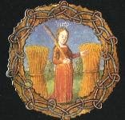
[à partir d'ici, le texte de D'Espagnet devient obscur et se rapproche beaucoup de l'Introïtus ; une note ésotérique transparaît ici. Voyons sous ce rapport les recommandations de Dom Pernety :
« Il ne faut presque jamais prendre les paroles des Philosophes à la lettre, parce que tous leurs termes ont double entente, et qu'ils affectent d'employer ceux qui sont équivoques. Ou s'ils font usage des termes connus et usités dans le langage ordinaire [Gebert, D'Espagnet], plus ce qu'ils disent paraît simple, clair et naturel, plus il faut y soupçonner de l'artifice. Timeo Danaos, et dona ferentes. Dans les endroits au contraire où ils paraissent embrouillés, enveloppés et presque inintelligibles, c'est ce qu'il faut étudier avec plus d'attention. La vérité y est cachée. Pour mieux découvrir cette vérité, il faut les comparer les uns avec les autres, faire une concordance de leurs expressions [c'est ce qu'a fait Newton, cf. B.J. Dobbs, Fondements] et de leurs dires, parce que l'un laisse échapper quelquefois ce qu'un autre a omis à dessein [Philalèthe]]
Prenez la Vierge ailée après qu'elle aura été très bien lavée, purifiée
[Dom Pernety considère que cette vierge ailée peut être l'équivalent de l'Aigle :« Tous appellent Aigle leur mercure, ou la partie volatile de leur matière. C'est le nom le plus commun qu'ils lui aient donné dans tous les temps. Les Adeptes de toutes les Nations sont d'accord là-dessus. Chez eux le Lion est la partie fixe, et l'Aigle la partie volatile. Ils ne parlent que des combats de ces deux animaux. [...] On a feint avec raison que l'Aigle fut d'un bon augure à Jupiter, puisque la matière se volatilise dans le temps que Jupiter remporte la victoire sur Saturne, c'est-à-dire lorsque la couleur grise prend la place de la noire. Elle fournit par la même raison des armes à ce Dieu contre les titans. » Voyez dans la section de l'humide radical métallique ce que nous disons sur l'Aigle]
et engrossée de la semence spirituelle d'un premier mâle, restant néanmoins encore vierge et impolluée, bien qu'elle soit enceinte. Tu la découvriras à ses joues teintes d'une couleur vermeille ; allie-la, et accouple-la à un second mâle (sans que pour autant elle doive être soupçonnée d'adultère) de la semence corporelle duquel elle concevra à nouveau. [cette allégorie n'est compatible qu'avec une fusion au sein d'un fondant de substances qui ne s'allient point avec le fondant ; il se peut que de la chaux soit utile à cet égard] Ensuite elle enfantera une lignée vénérable, qui sera de l'un et de l'autre sexe, et où prendra son origine une race immortelle de Rois très puissants.
59
Ayant parfaitement purgé l'Aigle et le Lion, renferme-les dans leur enclos transparent, et accouple-les, ayant étroitement fermé le vestibule, [il est fait référence à la voie humide, comme cela est le cas de presque tous les textes anciens] et en prenant soigneusement garde que leur haleine ne s'en exhale ou qu'un air étranger ne s'y insinue. Dans leur saillie, l'aigle déchirera et dévorera le lion et sera saisie ensuite d'un long sommeil, puis devenue hydropique par l'enflure de son estomac, elle se changera grâce à une merveilleuse métamorphose en un corbeau très noir, qui déployant petit à petit ses ailes, commencera à voler et dans son vol fera tomber l'eau des nuages, jusqu'à ce que, mouillé plusieurs fois, il quitte de lui-même ses plumes, et retombant en bas se change en un cygne très blanc. Que ceux qui ignorent les causes des choses, admirent cela dans leur étonnement, en considérant que le monde n'est rien d'autre qu'une métamorphose continuelle ; qu'ils admirent comment les semences des choses, lorsqu'elles sont parfaitement digérées, se changent en blancheur parfaite. Et que le philosophe imite la Nature dans son œuvre.
60
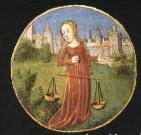
[sens général du titre : le moyen qui permet d'obtenir la liaison entre les deux extrémités du vaisseau de nature : le Soufre rouge et le Soufre blanc. Dom Pernety nous dévoile -Fables- le secret de l'Art sacerdotal dans la clef des Sciences :
« Le premier pas à la sagesse est la crainte de Dieu, le second la connaissance de la Nature. [...] La Nature enseigne aux clairvoyants la Physique hermétique. L'alchimie proprement dite est une opération de la nature, aidée par l'art. Elle nous met en main la clef de la magie naturelle ou de la physique, et nous rend admirables aux hommes, en nous élevant au-dessus du commun. Du Secret - La statue d'Harpocrate, qui avait une main sur sa bouche, était chez les anciens Sages l'emblème du secret, qui se fortifie dans le silence, s'affaiblit et s'évanouit par la révélation. [...] - Des Clefs de la Nature - De toutes choses matérielles il se fait de la cendre ; de la cendre on fait du sel, du sel on sépare l'eau et le mercure on compose un élixir ou une quintessence. »
Harpocrate, au sentiment de tous les auteurs, est le dieu du silence et les statues où il est représenté le montrent dans l'attitude de porter le doigt sur sa bouche. On pourra en rapprocher ce que Fulcanelli a dit sur un sujet analogue [cf. Cambriel]. Pour Pernety, on a souvent confondu Harpocrate avec Horus ; Harpocrate n'est pas le symbole du soleil mais il est fils d'Isis et d'Osiris et sa symbolique a des rapports avec le chat-huant, le chien et le serpent. Le chat-huant était l'oiseau de Minerve, déesse de la Sagesse ; le serpent fut toujours un symbole de prudence -en même temps que celui du dissolvant- et le chien un symbole de fidélité. On ne sera pas loin d'avoir fait la moitié du chemin si l'on examine le commentaire que donne Pernety, plus loin [chap. IV, La biche aux cornes d'or, Fables] :
« La Nature agit toujours longuement, et quoique l'Art puisse abréger ses opérations, il ne réussirait pas s'il en précipitait trop les procédés. Au moyen d'une chaleur douce, mais plus vive que celle de la Nature, on peut prématurer une fleur ou un fruit ; mais une chaleur trop violente brûlerait la plante, avant qu'elle eût pu produire ce qu'on en attendait. [cf.chapitre 35]. Ripley [Douze portes] nous assure d'ailleurs, et beaucoup d'autres, qu'il faut un an pour parvenir à la perfection de la pierre au blanc, ou la diane des Philosophes, que cet Auteur appelle chaux. »
A notre connaissance, peu d'auteurs se sont aventurés à donner le nom vulgaire d'une matière. C'est donc d'une chaux bien spéciale qu'il doit s'agir. Ripley ajoute qu'il faut un an pour que cette chaux devienne fusible, fixe et prenne une couleur permanente. A propos de la chaux et des pierres en général, il n'est pas étranger à notre propos que l'on aborde la Réparation du Genre humain par Deucalion et Pyrrha -Ovide, M., I, 8. Deucalion et Pyrrha furent les seuls à être épargnés lors du déluge, déclenché par Zeus. Pour reconstruire la race humaine, ils vont chercher du secours dans l'oracle des dieux et se dirigent vers le temple de Thémis. Voici ce que Thémis leur dit :
« Mortels, hors de mon temple allez sécher vos pleurs - Et pour fixer vos fortunes errantes - Essayez d'obtenir la fin de vos malheurs - Par les os de votre Grand'Mère - Le ciel est prêt de calmer son courroux - Si d'un coeur soumis et sincère - Vous les jetez derrière vous - ...»
Deucalion arrive à résoudre l'énigme et pense qu'à bien prendre l'oracle, c'est la Terre qui est évoquée puisque c'est notre mère à tous : c'est donc des cailloux qu'il faut que les héros lancent par devers eux. Deux autres conditions étaient requises par Thémis : les habits de Deucalion et Pyrrha devaient traîner -être pendants- et ils devaient avoir les yeux bandés. Le mot traînée, en grec, se dit olkoV, et évoque une action de tirer ou d'exercer une action qui est de brider, évoquant une rêne ; il évoque aussi une action de ramper. Dans ses deux acceptions, le rapport hermétique évoque le mors -lupus : mors armé de pointe. C'est une direction qui est ici donnée, une imposition en quelque sorte, imprimée aux mouvements de Deucalion et de Pyrrha. Quant aux yeux bandés, ils renvoient au terme katadew qui signifie lier solidement, attacher fortement. il semble à peine pensable que l'on retrouve ainsi par le seul fait du hasard deux symboles qui sont évoqués par les alchimistes, comme des plus importants dans l'oeuvre. Pourtant, on ne voit pas qu'Ovide ait pu avoir eu une initiation quelconque. On sait seulement que sa formation a été complétée vers l'âge de vingt ans par un voyage en Grèce, à Athènes où il a assisté à des cours de rhétorique et de philosophie. Il a visité longuement le monde grec -il le raconte lui-même dans ses Pontiques, II, 10- composées à la fin de sa vie. Sa passion pour les arts et pour la poésie a évidemment joué un rôle dans l'ampleur donnée à ce voyage et on ne peut douter que les Métamorphoses ne se ressentent pas ce dette empreinte.
Pour en revenir à ces pierres que jettent les deux héros, elles deviennnent molles dans la main et se mettent à croître : c'est exactement ce qu'on observe lorsqu'on éteint la chaux vive. Elle foisonne. Ovide ajoute :«Mais elle n'est encore dans ce premier effet - que le rude crayon d'un ouvrage imparfait - C'est comme une Statue à la hâte ébauchée - Du Ciseau qui la taille à peine encore touchée - Qui sur les premiers coups du Statuaire adroit - Fait connaître déjà ce qu'il faut qu'elle soit...7
Nous avons eu l'occasion dans d'autres sections d'analyser ce que la cabale révélait au sujet du burin [Caelos], du marbre statuaire et du statuaire lui-même : le burin représente une allusion à un sel qui tient le milieu entre le gypse et l'alun. Il trouve sa contrepartie dans l'épithète coelum [ciel, mais aussi burin pour tailler le marbre], le marbre est cette Gorgone dont Persée s'empare du Caput qui libère Pégase et le statuaire [Strongylion] livre le nom de l'autre terre qui procure le Soufre blanc. Evidemment, le lecteur pourra s'étonner de ce rapprochement qui pourrait paraître incongru entre Thémis et la chaux. Nous serions tout à fait d'accord avec lui au cas où le rapprochement aurait été fait a posteriori. Or, il se trouve que c'est lors de l'analyse du Verbum du Trévisan que nous avons été amenés à faire la relation entre Thémis et la chaux. ]
Pour donner la forme et la perfection à ses ouvrages, la Nature y procède de telle sorte qu'elle conduit la chose depuis le commencement de la génération jusqu'au dernier terme de la perfection par divers milieux, comme par divers degrés. Elle parvient donc à sa fin et à son but petit à petit et par degrés plutôt que par interruptions et par bonds, en limitant et en renfermant son ouvrage entre deux extrêmes distincts, et séparés par plusieurs milieux. Or, la pratique philosophique, qui doit imiter la nature dans la marche de son ouvrage, et dans la recherche de la Pierre, ne doit point s'écarter de la voie et de l'exemple de la Nature : car tout ce qui se fait hors de ses routes, constitue une erreur ou l'approche de l'erreur.
61
Les deux extrêmes de la pierre sont le vif-argent naturel, et l'élixir parfait : et les milieux par lesquels s'effectue tout le progrès de l'ouvrage, sont de trois sortes ; car ou bien ils regardent la matière, ou bien les opérations, ou bien les signes démonstratifs. Sur ces extrêmes et ces milieux roule tout l'accomplissement de l'œuvre. [Voyez Des maladies des Métaux, Fables :
«...L'hydropisie du mercure ne lui arrive que de trop d'aquosité et de crudité qui trouvent leur cause dans la froideur de la matrice où il est engendré, et de défaut de temps pour se cuire. Ce vice est un péché originel dont tous les autres métaux participent. Cette froideur, cette crudité, cette aquosité ne peuvent être guéries que par la chaleur et l'ignéité d'un soufre bien puissant...»
Voici pour le vif-argent ; les opérations des alchimistes sont censées le transformer en argent-vif, mercure des sages propres au travail du grand-oeuvre, mais c'est par cabale qu'il faut comprendre cela.]
62
Quant aux milieux matériels, ou qui concernent la matière de la pierre, il y en a divers degrés ; car les uns se tirent successivement des autres. Les premiers sont le mercure, sublimé philosophiquement, et les métaux parfaits. Bien que ceux-ci soient les derniers dans l'opération de la nature, ils tiennent lieu de milieux dans l'opération philosophique. De ces premiers sont tirés les seconds, à savoir les quatre éléments, qui sont tour à tour circulaires et fixes ; de ces seconds en sont encore issus les troisièmes, à savoir les deux sortes de soufre, dont la multiplication est le terme du premier régime de l'ouvrage. Les quatrièmes et derniers milieux sont les ferments et les onguents, avec leur poids et leur proportion justes, qui sont produits successivement dans l'ouvrage de l'élixir par le mélange des premiers. Enfin, du régime parfait de toutes ces choses se crée l'élixir parfait, qui est la dernière étape et le terme de tout l'Œuvre, où la Pierre des Philosophes se repose comme en son centre, et dont la multiplication n'est rien qu'un bref renouvellement des opérations susdites. [Ovide nous dit -M., I, 8- :
« Partout où quelque suc contracté de la Terre - tient son humidité renfermée en la pierre - La secrète vertu qui féconde leurs voeux - en produit de la chair, du sang, et des cheveux...»
Les deux premiers vers résument de façon lapidaire tout ce que nous avons analysé dans la section du Mercure de Nature ; le suc de la terre n'est autre :
«...[qu'un] suc pierreux tenu en dissolution dans l'eau souterraine qui lui sert de véhicule, varie beaucoup sur la nature de ce suc. On épuise toutes les ressources de l' imagination, et l'on ne dit rien de vraisemblable. Ce suc n étoit chez les anciens que l'eau chargée de parties terrestres plus ou moins grossieres, qui se pétrifioit en se desséchant. Il est devenu, chez les modernes, une matiere crystalline, une terre vitrifiée, un sable très-fin lamineux, un acide terreux coagulé avec des parties salines et métalliques...» -La Nature, Jean Baptiste Robinet.
Voila qui peut tenir lieu d'explication aux divers degrés des milieux matériels par lesquels la Pierre se fait.]
63
Les milieux qui regardent l'opération ou le régime (et qui sont également nommés les clés de l'œuvre) sont premièrement la dissolution ou liquéfaction ; deuxièmement, l'ablution ; troisièmement, la réduction ; quatrièmement, la fixation. Par la liquéfaction, les corps sont rendus à leur première matière, qui est fluide ; les choses cuites redeviennent crues, et alors (vient) l'accouplement du mâle et de la femelle, d'où s'engendre le corbeau ; et enfin la Pierre, par cette même liquéfaction, retourne en ses quatre éléments, ce qui se produit par le mouvement rétrograde des luminaires. L'ablution enseigne à blanchir le corbeau, et à changer Saturne [il s'agit du 1er régime de la voie humide. Pour Dom Pernety, le régime de Jupiter conduit à une coloration grise] en Jupiter, ce qui se fait par la conversion du corps en esprit. La fonction de la réduction est de rendre l'âme à la Pierre morte et inanimée, et de la nourrir d'un lait de rosée, tout spirituel, jusqu'à ce qu'elle ait pris vigueur. Dans ces deux dernières opérations, le Dragon [le Dragon n'est pas le même que précédemment : ici, il s'apparente au serpent Ouroboros, c'est-à-dire au Mercure philosophique] se fait violence à lui-même, et se dévorant la queue, il se consume et s'épuise totalement, et enfin se change en la Pierre. En dernier lieu, l'opération de la fixation fixe les deux soufres dans leur corps [c'est-à-dire par accrétion du soufre rouge qui est la teinture ou Âme au Soufre blanc qui est la Toyson d'or] : ceux-ci étant fixés, elle cuit graduellement au moyen de l'esprit qui est le médiateur des teintures, cette fermentation ; elle mûrit ce qui est cru, et adoucit ce qui est amer. Enfin, l'élixir fluide, en pénétrant et en léchant, engendre, perfectionne, et apporte le suprême degré de sublimité et d'excellence.
64
Les milieux qui concernent les signes démonstratifs, sont les couleurs qui apparaissent successivement et en ordre dans la matière, et qui en indiquent les affections et les passions, dont trois sont tenues pour les principales et critiques (quelques-uns en admettent une quatrième). La première, c'est la noire, qui est appelée la tête de corbeau, à cause de l'extrême noirceur qui arrive avec elle dans la matière ; son crépuscule et sa blancheur défaillante indiquent le commencement de l'action du feu de la nature, ou le commencement de la dissolution ; mais sa nuit la plus noire indique la perfection de la liquéfaction et de la confusion des éléments. Alors le grain commence à pourrir et à se corrompre, afin d'être plus propre à la génération. A la couleur noire succède la blanche, où gît la perfection du premier degré, celle du soufre blanc : alors, c'est là ce qu'on appelle la pierre bénie : c'est la terre blanche et feuilletée dans laquelle les Philosophes sèment leur or. La troisième couleur est la couleur citrine, qui se produit quand le blanc passe au rouge, et qui est comme un intermédiaire entre ces deux couleurs, étant mêlée de l'une et de l'autre, et pareille à l'aurore aux cheveux dorés, cette avant courrière du Soleil. La quatrième couleur, rouge ou sanguine, se tire de la blanche par le feu seul. Or, la blancheur, parce qu'elle est facilement altérée par toute autre couleur, commence aussi à s'effacer et à passer dès que l'aurore commence à y naître. Et la rougeur sombre accomplit l'ouvrage du soufre solaire, qui s'appelle la semence masculine, le feu de la pierre, la couronne royale, le fils du Soleil, et dans lequel se termine le premier travail de l'opérateur. [pour les couleurs, consultez la section de l'humide radical métallique Le nombre des couleurs fut pareillement figé à sept. Cette classification arbitraire a été consacrée par Newton et elle est venue jusqu'aux physiciens de notre temps. Elle remonte à une haute antiquité. Hérodote rapporte que la ville dEcbatane avait sept enceintes, peintes chacune d'une couleur différente :la dernière était dorée ; celle qui la précédait, argentée. M. Berthelot -Introduction, Chimie des Anciens- pense qu'il s'agit de la plus vieille mention qui établisse la relation du nombre sept avec les couleurs et les métaux. La ville fabuleuse des Atlantes, dans le roman de Platon, est pareillement entourée par des murs concentriques, dont les derniers sont revêtus d'or et d'argent; mais on n'y retrouve pas le mystique nombre sept. M. Berthelot nous dit dans son Introduction à la chimie des Anciens que : Entre les métaux et les planètes, le rapprochement résulte, non seulement de leur nombre, mais surtout de leur couleur. Les astres se manifestent à la vue avec des colorations sensiblement distinctes. La nature diverse de ces couleurs a fortifié le rapprochement des planètes et des métaux. C'est ainsi que l'on conçoit aisément l'assimilation de l'or, le plus éclatant et le roi des métaux, avec la lumière jaune du soleil, le dominateur du Ciel. La plus ancienne indication que l'on possède à cet égard se trouve dans Pindare. La cinquième ode des Isthméennes débute par ces mots:
« Mère du Soleil, Thia, connue sous beaucoup de noms, c'est à toi que les hommes doivent la puissance prépondérante de l'or ».
Dans Hésiode, Thia est une divinité, mère du soleil et de la lune, c'est-à-dire génératrice des principes de la lumière
(Théogonie, 371, 3;4). Un vieux scoliaste commente ces vers en disant :« de Thia etd'Hypérion vient le soleil, et du soleil, l'or. A chaque astre une matière est assignée. Au Soleil, l'or; à la Lune, l'argent ; à Mars, le fer; à Saturne, le plomb; à Jupiter, l'électrum ; à Hermès, l'étain; à Vénus, le cuivre (Pindare, t. II, éd. de Boeckh, 1819)».
Cette scolie remonte à l'époque Alexandrine. Elle reposait à l'origine sur des assimilations toutes naturelles. En effet, si la couleur jaune et brillante du soleil rappelle celle de l'or, la blanche et douce lumière de la lune a été de tout temps assimilée à la teinte de l'argent. La lumière rougeâtre de la planète Mars (igneus, d'après Pline; et puroeiV d'après les alchimistes) a rappelé de bonne heure l'éclat du sang et celui du fer, consacrés à la divinité du même nom. C'est ainsi que Didyme, dans son commentaire sur l'Iliade (l. V), commentaire un peu antérieur à l'ère chrétienne, parle de Mars, appelé l'astre du fer. L'éclat bleuâtre de Vénus, l'étoile du soir et du matin, rappelle pareillement la teinte des sels de cuivre, métal dont le nom est tiré de celui de l'île de Chypre, consacrée à la déesse Cypris, l'un des noms grecs de Vénus. De là le rapprochement fait par la plupart des auteurs. Entre la teinte blanche et sombre du plomb et celle de la planète Saturne, la parenté est plus étroite encore et elle est constamment invoquée depuis l'époque Alexandrine. Les couleurs et les métaux assignés à Mercure l'étincelant (a:ta6uùv; radians, d'après Pline; apparence due à son voisinage du soleil), et à Jupiter le resplendissant ont varié davantage. Toutes ces attributions sont liées étroitement à l'histoire de l'astrologie et de l'alchimie. En effet, dans l'esprit des auteurs de l'époque Alexandrine ce ne sont pas là de simples rapprochements ; mais il s'agit de la génération même des métaux, supposés produits sous l'influence des astres dans le sein de la terre. Proclus, philosophe néoplatonicien du Ve siècle de notre ère, dans son commentaire sur le Timée de Platon, expose que :
« l'or naturel et l'argent et chacun des métaux, comme des autres substances, sont engendrés dans la terre sous l'influence des divinités célestes et de leurs effluves. Le Soleil produit l'or; la Lune, l'argent; Saturne, le plomb, et Mars, le fer »
Les sept métaux sont en relation avec les sept astres brillants, par leur couleur, leur nature et leur propriétés :ils concourent à en former la substance. Chez les Sabéens, héritiers des anciens Chaldéens, les sept planètes étaient adorées comme divinités; chacune avait son temple, et, dans le temple, sa statue faite avec le métal qui lui était dédié. Ainsi le Soleil avait une statue d'or; la Lune, une statue d'argent; Mars, une statue de fer; Vénus, une statue de cuivre; Jupiter, une statue d'étain ; Saturne, une statue de plomb. Quant à la planète Mercure, sa statue était faite avec un assemblage de tous les métaux, et dans le creux on versait une grande quantité de mercure. Ce sont là des contes arabes, qui rappellent les théories alchimiques sur les métaux et sur le mercure, regardé comme leur matière première. Mais ces contes reposent sur de vieilles traditions défigurées, relatives à l'adoration des planètes, à Babylone et en Chaldée, et à leurs relations avec les métaux. exprimées par un certain symbole, représentant les révolutions célestes et le passage des âmes à travers les astres. C'était un escalier, muni de 7 portes élevées, avec une 8ème au sommet.
La première porte est de plomb ; elle est assignée à Saturne, la lenteur de cet astre étant exprimée par la pesanteur du métal.
La seconde porte est d'étain; elle est assignée à Vénus, dont la lumière rappelle l'éclat et la mollesse de ce corps.
La troisième porte est d'airain, assignée à Jupiter, à cause de la résistance du métal.
La quatrième porte est de fer, assignée à Hermès, parce que ce métal est utile au commerce, et se prête à toute espèce de travail.
La cinquième porte, assignée à Mars, est formée par un alliage de cuivre monétaire, inégal et mélangé.
La sixième porte est d'argent, consacrée à la Lune;
La septième porte est d'or, consacrée au soleil; ces deux métaux répondent aux couleurs des deux astres.
Les attributions des métaux aux planètes ne sont pas ici tout à fait. les mêmes que chez les Néoplatoniciens et les alchimistes. Elles semblent répondre à une tradition un peu différente ; dans certaines listes astrologiques, Jupiter est de même assigné à l'airain, et Mars au cuivre. -Introduction, Métaux et planètes]
65
Outre ces signes essentiels et décisifs, qui adhèrent radicalement à la matière, et en indiquent les changements les plus importants, il y a encore une infinité d'autres couleurs apparentes et trompeuses, qui se font voir dans les vapeurs, comme l'arc-en-ciel dans les nuées, et se dissipent aussitôt, s'effaçant pour laisser place à d'autres, qui sont plutôt dans l'air que dans la terre. L'opérateur ne doit pas se mettre beaucoup en peine de celles-là, d'autant qu'elles ne sont pas permanentes, et ne sont pas issues de la disposition intrinsèque de la matière, mais du feu, qui peint et colore à son gré l'humide subtil, par hasard même ; bien que ce soit l'effet de sa chaleur.
66
Néanmoins, quelques-unes de ces couleurs étrangères, quand elles surviennent hors du moment propice, présagent à l'ouvrage quelque chose de sinistre. Ainsi, sa noirceur réitérée : il ne faut jamais souffrir qu'après que les petits des corbeaux aient quitté leurs nids, ils y retournent. Ou encore, une rougeur qui vient trop vite, car cette couleur-là ne doit apparaître qu'une fois, et seulement à la fin, car alors elle fait concevoir une sûre espérance de moisson. Si elle rougit la matière plutôt, elle est un signe de grande sécheresse, ce qui ne va pas sans un péril que seul le Ciel en répandant une pluie soudaine, peut détourner.
67
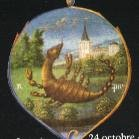
[Par digestions, il faut entendre les principes opératifs ; la préparation -nous dit Pernety- est composée de quatre parties. La première est la solution de la matière en eau mercurielle ; la seconde est la préparation du mercure des philosophes ; la troisième est la corruption ; la quatrième, la génération et la création du soufre philosophique. La première se fait par la semence minérale de la terre ; la seconde volatilise et spermatise les corps ; la troisième fait la séparation des substances et leur rectification ; la quatrième les unit et les fixe, ce qui est la création de la pierre. Les philosophes ont comparé la préparation à la création du monde, qui fut d'abord une masse, un chaos, une terre vide, informe et ténébreuse qui n'était rien de particulier. On peut voir dans le Ier livre des Métamorphoses d'Ovide une allégorie se rapportant aux éléments primordiaux :
« Avant la Mer, la Terre, et le grand-oeuvre - Il y avait en tout ce Monde énorme - Tant seulement de Nature une forme - Dicte chaos, un monceau amassé - Gros, grand, et lourd, nullement compassé - Bref, ce n'estoit qu'une pesanteur vile - Sans aucun art, une masse immobile, - Là ou gisoient les semences encloses, - Desquelles sont produites toutes choses - Qui lors estoient ensemble mal couplées, - Et l'une en l'autre en grand discord troublée. » - traduit par Cl. Marot-
Les philosophes ont comparé la seconde opération à la formation d'une sorte d'eau pondéreuse et visqueuse, pleine de l'esprit occulte de son soufre. La troisième est la figure de la terre qui parut aride après la séparation des eaux.
Par digestions successives, comme par degrés, la Pierre philosophale acquiert de nouvelles forces, et enfin son entière perfection. L'ouvrage s'accomplit par quatre digestions, qui répondent et conviennent aux quatre opérations et régimes susdits, dont le feu est l'auteur, et le maître : c'est lui qui y fait et y introduit toutes les différences grâce auxquelles nous les avons distinguées.
La première digestion opère la dissolution du corps, au cours de laquelle a lieu le premier accouplement du mâle et de la femelle, le mélange de leurs deux semences, la putréfaction et la résolution des éléments en une eau homogène, l'éclipse du Soleil et de la Lune en la tête du Dragon. Enfin par elle le monde retourne à l'ancien chaos et à l'abîme ténébreux. Cette première digestion s'opère comme celle qui a lieu dans l'estomac par un temps de chaleur cuisante et débilitante, qui est plus propre à la corruption qu'à la génération. [Solution [Fables] :
« la solution, chymiqement parlant, est une atténuation ou liquéfaction de la matière sous forme d'eau, d'huile, d'esprit ou d'humeur. Mais la Philosophique est une réduction du corps en sa matière première, ou une désunion naturelle des parties du composé, et une coagulation des parties spirituelles. C'est pourquoi les Philosophes l'appellent une solution du corps et une congélation de l'esprit. Son effet est d'aquéfier, dissoudre, ouvrir, réincruder, décuire, et évacuer les substances de leur terrestréités, de décorporifier le mixte pour le réduire en sperme. »
Ce sont des réactions d'oxydo-réduction qui sont décrites. Le mot de réincrudation prend ici toute sa valeur. On en trouve une allégorie et des emblèmes dans le Splendor Solis àToyson d'or]
Pendant la seconde digestion, l'esprit de Dieu vole au-dessus des eaux : la lumière commence à paraître et les eaux commencent à se séparer des eaux. Le Soleil et la Lune se renouvellent, les éléments sont tirés du chaos, afin que mélangés avec proportion par la vertu de l'esprit qui les gouverne, ils puissent refaire un monde nouveau ; un nouveau ciel et une nouvelle terre se forment. Ensuite tous les corps deviennent spirituels ; les petits des corbeaux ayant changé de plumes commencent à devenir colombes ; l'aigle et le lion s'embrassent d'un nœud éternel. Cette régénération du monde se fait par le moyen d'un esprit de feu qui descend en forme d'eau et efface le péché originel : car l'eau des philosophes est le feu même, quand elle est émue et élevée par la chaleur du bain. Mais prenez garde que la séparation des eaux ne se fasse selon leur poids et leur mesure, de peur que celles qui restent sous le ciel ne noient la terre, ou que celles qui sont emportées au-dessus le ciel ne la laissent aride. " Qu'une eau trop avare n'imprègne pas ici le sable stérile ! " (Virgile.) [c'est ici la Fermentation qui est décrite. voici ce qu'en dit Pernety [Fables] :
« Le ferment est dans l'oeuvre ce que le levain est dans la fabrique du pain. On ne peut faire du pain sans levain, et l'on ne peut faire de l'or sans or. L'or est donc l'âme et ce qui détermine la forme intrinsèque de la pierre. [...] De même la médecine dorée n'est qu'une composition de terre et d'eau, c'est-à-dire de soufre et de mercure fermentés avec l'or ; mais avec un or réincrudé. Car comme on ne peut faire du levain avec du pain cuit, on ne peut en faire un avec l'or vulgaire, tant qu'il demeure or vulgaire. Le mercure ou eau mercurielle est cette eau, le soufre cette farine, qui par une longue fermentation s'aigrissent et sont faits levain, avec lequel l'or et l'argent sont faits. Et comme le levain se multiplie éternellement, et sert toujours de matière à faire du pain, la médecine philosophique se multiplie aussi, et sert éternellement de levain pour faire de l'or. »
Vu dans l'optique de notre système, il est vrai que le soufre est la farine et l'eau mercurielle ce dissolvant. Voyez la section sur le Mercure pour des correspondances plus précises. Pour une étude sur le ferment, voyez l'Idée alchimique, II et ss.]
La troisième digestion donne à la terre qui vient d'être renouvelée un lait de rosée, et lui communique toutes les vertus spirituelles de la quintessence ; elle lie au corps l'âme vivifiante par l'entremise de l'esprit. Alors la terre possède en elle un riche trésor, et devient d'abord semblable à la Lune éblouissante, puis au Soleil rougeoyant : elle est dite d'abord terre de Lune, puis terre de Soleil, car elle naît, dans un cas comme dans l'autre, du mariage de l'un et de l'autre. Ni l'une ni l'autre terre ne craignent plus les rigueurs du feu, car toutes deux sont exemptes de toute tache, parce qu'elles ont été purifiées plusieurs fois de leur tare par ce feu (même), et en ont souffert un grave martyre, jusqu'à ce que tous les éléments aient été digérés ensemble. [Dom Pernety dit ici que le grand secret de l'oeuvre est de savoir blanchir le laiton et il énumère sur une page tous les qualificatifs par lesquels le philosophes définissent la matière qui résulte de la conjonction des deux Soufres :
page du tome I des Fables Egyptiennes et Grecques
A cette liste, on peut ajouter les mots : voile, voile blanc, narcisse, lys, rose blanche, os calciné, coque d'oeuf, etc. ]
71
La quatrième digestion est la consommation de tous les mystères du monde : par elle la terre étant changée en un très excellent ferment, fait lever elle-même tous les autres corps changés en un corps parfait, parce qu'elle a passé en la nature céleste de la quintessence, de sorte que sa vertu inspirée par l'esprit de l'univers est la panacée et la médecine générale de toutes les maladies de toutes les créatures. Le fourneau secret des philosophes te découvrira ce miracle de la nature et de l'art par des digestions renouvelées du premier régime de l'ouvrage. Sois juste dans tes œuvres afin que Dieu te soit propice, sans quoi le labourage de ta terre sera vain, car " cette moisson ne répondra pas aux vœux du paysan avare ".
72
Tout le processus de l'Œuvre philosophique, n'est rien d'autre que solution et congélation. La solution est du corps, la congélation, de l'esprit, mais l'opération de l'un et de l'autre est une. Or le fixe et le volatil se mêlent et s'unissent parfaitement dans l'esprit, ce qui ne pourrait se faire, si d'abord le corps fixe n'avait été dissous et rendu volatil. Par la réduction, le corps volatil se fixe en un corps permanent, et la nature volatile passe en une nature fixe, tout comme la fixe était devenue volatile. Mais tout autant que les natures errent confuses même dans l'esprit, cet esprit qui leur est mêlé n'est pas pur et garde une nature moyenne entre le corps et l'esprit, le fixe et le volatil. [Cette séparation du fixe d'avec le volatile ou ce combat entre ces deux natures, c'est la séparation d'eau de la terre, où l'air se trouva et le feu se répandit et ce n'est selon Pernety :
«...qu'un changement successif de la matière sous cette double forme ; ce qui a fait dire aux philosophes, que l'eau est tout le fondement de l'oeuvre, sans laquelle la terre ne pouvait être dissoute, pourrie, préparée, et que la terre est le corps où les éléments humides se terminent, se congèlent, et s'ensevelissent en quelque façon, pour reprendre une plus noble vie. il se fait alors une circulation, dont le premier mouvement sublime la matière en la raréfiant ; le second l'abaisse en la congelant ; et le tout se termine enfin en une espèce de repos, ou plutôt un mouvement interne, une coction insensible de la matière...» -Fables-
Ce changement passe d'abord par une réduction de la matière en eau : c'est, au vrai, le déluge qu'installe Zeus. Cette première phase est suivie d'une deuxième où s'évacue l'humidité superflue et une coagulation de la matière sous forme d'une terre visqueuse et métallique. Nous en trouvons l'analogie dans Ovide, M., I, 9 : La Défaite du serpent Python :
«...Et les seconds efforts si longtemps retenus - Passent jusqu'à former des Monstres inconnus - Que la stérilité lui parut préférable - quand elle vit Python, ce Serpent effroyable - Qui semant en tous lieux l'épouvante et l'horreur - Des peuples renaissant rendit la terreur -...»
Ce serpent Python est semblable à Typhon comme on l'a vu ailleurs [Argonautes ; humide radical métallique] ; Il vaut qu'on s'arrête sur ce passages des Myst. :
« C'est Cadmos perçant le serpent contre un chêne ; Apollon tuant à coups de flèches le monstre Python et Jason le dragon de Colchide ; c'est Horus combattant le Typhon du mythe osirien ; Hercule coupant les têtes de l'Hydre et Persée celle de la Gorgone ; Saint Michel, Saint Georges, Saint Marc terrassant le dragon, répliques chrétiennes de Persée, tuant le monstre gardien d'Andromède, monté sur son cheval Pégase ; c'est encore le combat du renard et du coq...celui de l'alchimiste et du dragon [Cyliani], de la rémore et de la salamandre [De Cyrano Bergerac], du serpent rouge et du serpent vert, etc. »
Fulcanelli s'est montré peu charitable dans ce passage car l'allégorie d'Apollon tuant le serpent Python ne se situe pas au même plan chronologique que les autres allégories décrites. Il faut donc ranger à part les allégories de Cadmos, d'Apollon, d'Horus qui se rapportent à la phase où les oxydes sont à l'état dissous et qui correspond à la grande éclipse de soleil et de lune de Lulle. Celles de Persée, de Saint-Michel ou de Saint-George, etc. se rapportent à la préparation du Caput, matière initiale du Mercure philosophique. Le combat de la rémore et de la salamandre évoque le début de la coagulation de la mer mercurielle, de même celle du renard et du coq. Ces deux dernières allégories se comprennent comme une fixation progressive et c'est ainsi qu'il faut comprendre celles de Cadmos et d'Apollon. voilà du reste ce qu'en dit Ovide :
«...A peine en son carquois reste-t-il une flèche - Il frappe, et chaque coup ouvre une large brèche - Par où ce Monstre horrible, achevant son destin - Vomit au lieu de sang de noirs flots de venin - Ce triomphe, d'un Dieu ne parut point indigne - Et pour en conserver un souvenir insigne - Du nom de ce Serpent nos Peuples anciens - Etablirent des jeux qu'on nomma Pythiens. » M., I, 9
On donne une autre version de cette fable où, lorsque Héra apprit que Léto était enceinte des oeuvres de Zeus, elle demanda à la Terre d'enfanter un monstre, Python, chargé de poursuivre Léto sans relâche. Grâce à Poséidon, Léto réussit à se cacher et accoucha, sur Délos, d'Artémis et d'Apollon.]
73
La génération de la Pierre se fait à l'exemple de la création du monde. En effet, il faut qu'elle ait d'abord son chaos et sa matière première, dans laquelle les éléments confus flottent jusqu'à ce que l'esprit de feu les sépare ; que des éléments séparés les plus légers soient portés en haut, et les plus lourds en bas ; que la lumière une fois née, les ténèbres reculent ; enfin que les eaux se rassemblent, et qu'apparaisse la terre sèche. Alors deux grands luminaires émergent successivement, et dans la terre philosophique sont produites les vertus minérales, végétales et animales. [Le Chaos et la Matière première de la Pierre font l'objet de l'oeuvre au noir et de la phase de putréfaction, qui précède la dissolution totale - le Sel incombustible, analogue à l'Arsenic de Geber ou au Corps des trois Principes est l'élément qui est lourd ; le Soufre, plus léger, est celui qui est sublimé dans l'Air des Sages - vient alors l'astre rayonnant qui, au dire des Adeptes, annonce que la Pierre naît -]
74
Dieu créa Adam du limon de la terre, dans lequel étaient entées les vertus de tous les éléments, principalement celles de la terre et de l'eau qui constituent surtout la masse sensible et corporelle : dans cette masse Dieu souffla un souffle de vie, et la vivifia du Soleil de l'esprit saint ; au mâle il donna Eve pour femme, et les bénissant, il leur donna le précepte et la faculté de se multiplier. La génération de la Pierre philosophale n'est pas dissemblable de la création d'Adam : car il se forme d'abord un limon composé d'un corps terrestre et pesant, dissous par l'eau, et qui pour cela a mérité le nom célèbre de terre adamique : toutes les qualités et les vertus des éléments s'y trouvent. Puis une âme céleste lui est infusée par l'esprit de la quintessence et l'influx du Soleil, et enfin, grâce à la bénédiction et à la rosée du ciel, la vertu de se multiplier à l'infini, par le moyen de l'accouplement des deux sexes, lui est communiquée. [Sur la Terre adamique, voyez 1, 2, 3, 4, 5, 6, 7, 8, 9, 10, ]
75
Le grand secret de l'ouvrage tient à la façon d'opérer, qui consiste tout entière dans le parfait régime des éléments. Car il faut que la matière de la pierre passe d'une nature en une autre : les éléments en sont tirés successivement et règnent tour à tour. Or chaque élément est sans cesse agité par les cercles de l'humide et du sec, jusqu'à ce que toutes choses, étant digérées par cette circulation, se reposent et prennent leur place. [Le secret tient à la tenue du Mercure lors de la Grande Coction - Au début, le FEU domine, surtout sous forme élémentaire. Vient ensuite l'EAU, aidée par le FEU : c'est l'Eau permanente des alchimistes. Cette EAU contient un AIR dans lequel le Soufre est sublimé. Notez que tout cela s'entend par la voie sèche - A une phase ultérieure, la TERRE prend le dessus en épuisant l'EAU qui s'évapore en laissant l'AIR épuiser peu à peu le Soufre qu'il contient. Pour les Eléments, voyez l'Idée alchimique, V -]
76
Dans l'ouvrage de la Pierre, les autres éléments circulent sous la figure de l'eau, parce que la terre est résolue en eau, dans laquelle se trouvent tous les autres éléments : l'eau est sublimée en vapeur, la vapeur retombe en eau. Ainsi l'eau est agitée par un cercle infatigable, jusqu'à ce que, devenue fixe, elle cesse son agitation, et prenne sa place inférieure. Quand elle est devenue fixe, tous les autres éléments le deviennent avec elle. Ainsi ils se mêlent tous en elle, ils sont attirés par elle, ils vivent avec elle, et meurent en elle. La terre est donc leur tombeau commun et leur terme dernier. [Les Eléments se réduisent à leur premier principe qui est celui d'une TERRE qui contient un RAYON IGNE, où se sont condensés l'AIR et le FEU. Le Mercure, c'est-à-dire l'ESPRIT, s'est chargé de disposer ce Soufre en sorte que l'Adepte verra dans l'astérie des Sages le signe étoilé tant attendu -]
77
L'ordre de la nature demande que toute génération commence par l'humide et se fasse dans l'humide ; donc dans l'ouvrage de la Pierre philosophale, la Nature doit être réduite en un ordre tout semblable. De sorte qu'il faut que la matière de la pierre, qui est terrestre, compacte et sèche, soit dissoute avant toute chose, et qu'elle s'écoule en l'élément de l'eau, qui est le plus proche d'elle : et alors Saturne sera engendré par le Soleil. [Voyez la Monade Hiéroglyphique de John Dee pour situer en quel point Saturne et le Soleil sont liés -]
78
A l'eau agitée par sept tours ou révolutions, succède l'air, qui doit lui aussi circuler par autant de cercles et de réductions, jusqu'à ce qu'il se fixe et se dépose, et que Saturne étant chassé, Jupiter se saisisse des insignes et du gouvernement du Royaume. Par son avènement l'enfant philosophique est formé et nourri dans la matrice, et il vient ensuite au jour avec une face blanche et une teinte sereine, semblable à la splendeur de la Lune.[Saturne, suivi de Jupiter, puis de la Lune, annoncent les régimes de la Grande coction - le style rappelle un peu celui de Monte Snyders. Voyez Gardes du Corps pour un extrait - ]
79
Enfin le feu de la Nature, qui aide les éléments dans leurs fonctions, de caché qu'il est devient manifeste, y étant excité et provoqué par un feu (à lui-même) interne. Alors le Safran teint le Lys, la rougeur se mêle à la blancheur sur les joues de l'enfant devenu plus robuste, et l'on prépare une couronne au Roi futur. Telle est la consommation du premier régime de l'ouvrage, et l'achèvement de la circulation des éléments, dont un signe apparaît quand toutes choses deviennent sèches, et que le corps vide d'esprit gît abattu, privé de pouls et de mouvement. Ainsi la Terre tient enfin dans le repos tous les autres éléments.
80
Le feu enté sur la Pierre est le maître qui préside à la Nature : il est le fils du Soleil, et son lieutenant, qui meut et digère la matière. Et c'est lui qui, en elle, achève et perfectionne tout, s'il réussit à obtenir la liberté : car y étant caché sous une écorce dure, il n'a point de forces. Procure-lui donc la liberté, afin qu'il puisse te servir. Mais prends garde de trop le presser, car ne pouvant supporter la tyrannie, il s'échapperait sans te laisser aucun espoir de retour. Attire-le donc tout doucement en le flattant, et après l'avoir attiré, conserve-le avec beaucoup de prudence.
81
Le premier moteur de la Nature est le feu externe, modérateur du feu interne et de tout l'ouvrage. Que le Philosophe en connaisse donc bien le régime, qu'il en observe les degrés et les points, car de lui dépend le salut ou la ruine de l'œuvre. Ainsi l'art vient au secours de la nature, et le philosophe est l'administrateur de l'un et de l'autre.
82
Par ces deux instruments de l'art et de la nature, la Pierre s'élève doucement avec beaucoup d'adresse, de la Terre vers le Ciel, et du Ciel redescend vers la Terre, parce que la Terre est sa nourrice, et que, portée dans sa matrice, elle reçoit à la fois la force des choses supérieures et des choses inférieures.
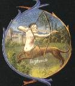
La circulation des éléments se fait par deux sortes de roues, la majeure (ou étendue) et la mineure (ou étroite). La roue étendue fixe dans la Terre tous les éléments, et son cercle ne s'achève pas sans qu'elle soit venue à bout de l'ouvrage entier du soufre. La révolution de la roue mineure se termine par l'extraction et la préparation de chaque élément. Or dans cette roue il y a trois cercles, qui, par un certain mouvement inégal et confus, agitent la matière incessamment et diversement, et font tourner chaque élément plusieurs fois, et au moins sept. Ces cercles se succèdent néanmoins en ordre et tour à tour : et ils sont tellement bien accordés entre eux, que si l'un défaille, c'est en vain que les deux autres travaillent. Ce sont là les instruments de la Nature par lesquels les éléments sont préparés. Que le Philosophe considère donc le progrès de la Nature tel que je l'ai décrit à cette fin plus au long dans mon traité de Physique.[Il n'est pas aisé de savoir exactement ce qu'entend D'Espagnet. Les deux roues sont familières au lecteur du Mystère des Cathédrales : c'est le feu de roue. La roue étendue semble être analogue au laboureur que l'on voit étendre le semailles dans le champ figurant sur l'un des emblèmes de l'Atalanta fugiens - il s'agit des mesures par lesquels les Adeptes préparent leur Or enté, qui n'est bien sûr pas l'or vulgaire. Cette roue principale est l'hiéroglyphe du temps de la deuxième partie de la Grande Coction, phase sèche où l'Eau où le Mercure commence à se volatiliser. C'est la phase capitale de la troisième partie du Grand oeuvre qui démarre au régime de la Lune, après le régime de transition de Jupiter. La première phase, phase humide, est dominée par la roue mineure où chaque cercle figure l'un des trois principes : salé, sulfureux et mercuriel.]
84
Chaque cercle a son mouvement propre. Les mouvements de ces cercles se produisent à l'endroit de l'humide et à l'endroit du sec, et ils sont tellement enchaînés les uns aux autres, qu'ils ne produisent tous ensemble qu'une opération, et ne font qu'un seul concert avec la Nature. Deux d'entre eux sont opposés, tant par leurs termes qu'à raison de leurs causes, et de leurs effets : car l'un, en desséchant, meut la matière vers le haut par la chaleur, l'autre, en humectant, la meut vers le bas par le froid. Le troisième cercle, qui représente le repos et le sommeil, cause la cessation des deux autres, en digérant (la matière) par une température parfaite.
85
De ces trois cercles, le premier est l'évacuation, dont le rôle est de bannir l'humide superflu de la matière, et d'en séparer le pur, le net et le subtil des lies grasses et terrestres. Or, dans le mouvement de ce cercle, peuvent naître de grands inconvénients et de graves dangers, parce qu'il concerne des choses toutes spirituelles, et qu'il rend exubérante la Nature.
86
En faisant mouvoir ce cercle, il y a deux choses auxquelles il faut prendre garde. La première, qu'il ne soit pas mû trop âprement, et l'autre, qu'il ne le soit pas plus longtemps qu'il n'est nécessaire. Le mouvement précipité cause dans la matière une confusion telle que la portion épaisse, impure et indigeste, et le corps qui n'est pas encore bien dissous, s'envolent avec l'esprit, et s'évaporent avec ce qui est dissous, pur et subtil. Par ce mouvement précipité les natures terrestre et céleste sont confondues, et l'esprit de la quintessence, corrompu par le mélange de la terre, perd sa pointe et devient débile. Tandis que par un mouvement trop long, la terre, trop vidée de son esprit, devient tellement languissante et sèche, qu'elle ne peut plus être facilement réparée et rendue à sa température. L'une et l'autre faute brûlent les teintures, et les font même s'évanouir. [C'est ce que les Adeptes appellent brûler les fleurs, quand le cercle est mû trop vite. Par contre, il est essentiel que le mouvement dure longtemps - ]
87
Le second cercle, c'est la restauration, dont le rôle est de rendre par la boisson des forces au corps pantelant et débile. Le premier cercle a été un organe de sueur et de travail ; celui-ci est un organe de rafraîchissement et de consolation. Il agit en pétrissant et en ramollissant la terre, à la façon des potiers, afin qu'elle se mêle mieux. [cette sueur est nettement visible sur certains emblèmes, en particulier celle du De Lapide Philosophorum de Lambsprinck - ]
88
II faut que le mouvement de ce cercle soit plus léger que le mouvement du premier, principalement dans le commencement de sa résolution et de son tour : de peur que les petits des corbeaux ne soient submergés dans leur nid par le regorgement des eaux, et que le monde naissant ne soit englouti par le déluge. Ce cercle est celui qui pèse l'eau et qui en examine la mesure, car il le distribue par la raison et la proportion géométriques. A la vérité, il n'y a presque point de plus grand secret dans toute la pratique de l'ouvrage, que le mouvement juste et équilibré de ce cercle : car c'est lui qui informe l'enfant philosophique, et lui insuffle l'âme et la vie.
89
Les lois du mouvement de ce cercle sont qu'il tourne lentement et par degrés, et qu'il répande (l'humide) avec retenue, de peur que s'il était trop précipité, il ne s'éloigne de sa juste mesure, et que le feu, tant naturel qu'enté, qui est l'architecte de tout l'ouvrage, une fois recouvert par les eaux ne perde sa vigueur, ou même ne s'éteigne. Il faut aussi que la nourriture solide et la liquide soient prises tour à tour, afin que la digestion se fasse mieux, et que la proportion du sec et de l'humide soit plus parfaite, car leur liaison indissoluble est la fin et le corps de l'ouvrage. Prends garde donc de mettre autant d'humide lorsque tu arroses, qu'il ne s'en est consumé dans la chaleur de l'évacuation, afin que la restauration, qui est corroborative, restitue autant de forces perdues que l'évacuation débilitante en aura enlevées.
90
Le troisième cercle, qui est la digestion, agit par un mouvement tacite et insensible : c'est pourquoi les philosophes disent qu'il s'accomplit dans un fourneau secret. Elle cuit la nourriture qu'elle a reçue et la change en parties homogènes du corps ; c'est pourquoi on l'appelle putréfaction parce que, comme la nourriture dans l'estomac, elle est corrompue avant de passer dans le sang et les parties similaires : de même cette opération broie l'aliment par une chaleur cuisante et stomacale, et la putréfie en quelque sorte afin qu'elle se fixe mieux et passe de la nature du mercure à celle du soufre. On l'appelle aussi inhumation, parce que l'esprit est par elle inhumé et enseveli comme un mort dans la terre. Parce qu'elle agit fort lentement, elle a besoin d'autant plus de temps. Les deux premiers cercles travaillent surtout à dissoudre, et celui-ci à congeler, bien que tous opèrent l'un et l'autre. [ce troisième cercle correspond au régime de Saturne et il s'accomplit - de même que les deux autres - dans l'athanor ou vase de nature. Mais nous avons l'impression que D'Espagnet a brouillé le jeu puisque cette phase de putréfaction, qu'il décrit dans ce chapitre, doit survenir avant les deux autres -]
91
Les lois de ce cercle veulent qu'il soit mû par une chaleur de fumier très lente et néanmoins subtile, afin que les éléments volatils ne s'enfuient pas et que l'esprit ne soit pas troublé, au moment de sa conjonction très étroite avec le corps : tout se passe alors dans un loisir parfaitement tranquille. C'est pourquoi il faut surtout prendre garde que la terre ne soit troublée par aucun vent ni aucune pluie. Enfin il faut que ce troisième cercle succède sur le champ et dans son ordre toujours au second, comme le second au premier. Ainsi par des travaux interrompus et par des détours, ces trois cercles errants accomplissent une seule et entière circulation, qui répétée plusieurs fois convertit toute chose en terre et met la paix entre les ennemis.
92
La nature use du feu, de même que l'art à son exemple, comme d'un instrument et d'un marteau pour forger leurs ouvrages : donc dans les opérations de l'une et de l'autre, le feu est maître et magistrat. C'est pourquoi la connaissance des feux est par-dessus tout nécessaire à un philosophe, sans quoi, comme un autre Ixion, il tournera en un vain travail la roue de la nature à laquelle il est attaché. [sur Ixion, voir : 1, 2, 3, 4, 5, 6, 7, 8, 9, 10,]
93
Le nom de feu est homonyme parmi les philosophes, car il se prend quelquefois par métonymie pour chaleur, et ainsi il y a autant de feux que de chaleurs. Dans la génération des métaux et des végétaux la nature reconnaît un triple feu, à savoir le céleste, le terrestre et le greffé. Le premier coule du Soleil comme de sa source dans le sein de la terre : il émeut les fumées ou vapeurs du mercure et du soufre, desquelles sont créés les métaux, et se mêle à elles ; il excite le feu greffé dans les semences des végétaux, où il dort, et lui ajoute de petits feux pareils à des éperons, pour développer la végétation. Le second feu est caché dans les entrailles de la terre : par son impulsion et son action, les vapeurs souterraines sont poussées en haut par des pores et de petits tuyaux, et chassées du centre vers la surface du sol, aussi bien pour la composition des métaux là où la terre est comme enflée, que pour la production des végétaux, en putréfiant, en amollissant, et en préparant pour la génération leurs semences. Quant au troisième, qui est engendré du premier, c'est-à-dire du feu solaire, dans la fumée vaporeuse des métaux, s'étant mêlé dans leur menstrue, il forme une concrétion avec cette matière humide et y demeure comme retenu prisonnier par force, ou plutôt il y est attaché comme la forme du mixte. Il demeure là enté dans les semences des végétaux, jusqu'à ce qu'étant sollicité et ému par les rayons paternels, il agite et informe la matière intérieure, et devienne ainsi le sculpteur et l'économe du mixte tout entier. Mais dans la génération des animaux, le feu céleste coopère aussi insensiblement avec l'animal, car il est le premier agent dans la nature. La chaleur de la femelle répond à la chaleur terrestre, lorsqu'elle putréfie, fomente et prépare la semence : mais le feu enté dans la semence est le fils du Soleil, qui dispose la matière, et l'ayant disposée, l'informe. [pour le feu, voir l'Idée alchimique, V et la Cristallogénie. Le feu céleste, c'est celui de la lumière solaire, mais c'est aussi celui des planètes, figurant les hiéroglyphes des planètes. John Dee donne dans sa Monade un aperçu, étonnant de concision, des différents feux - le feu terrestre, c'est celui de nature, qui agit essentiellement par voie humide, voir Mercure de Nature - Enfin, le feu greffé est celui de la génération, celle de l'or enté -]
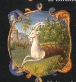
[Avant d'aborder le feu de Nature, il faut examiner le feu de l'art, c'est-à-dire les degrés de feu préconisés par les chymistes. Pour cela, nous avons emprunté et adapté les lignes suivantes aux traités de Lemery et de Lefèvre. Après qu'on a bâti les fourneaux, et préparé et luté les vaisseaux qui doivent être lutés, il faut choisir et ensuite ménager le feu convenable aux matières, sur lesquelles on veut travailler, et pour cet effet savoir quels feux sont les plus ou moins violents.
Toutes ces sortes de feux ont encore leurs degrés, surtout les violents, tant en augmentant le feu qu'ouvrant les registres ; d'où vient qu'on dit donner le feu de premier, second, troisième, et quatrième degré, comme l'on observe surtout en la distillation des esprits. Il y a outre cela des autres feux, comme le feu de lampe, du fumier, du miroir ardent, et autres. Il nous faut à présent parler du Feu central, tel qu'on le concevait au temps où avait cours la théorie du phlogistique. Pernety est amené à définir trois sortes de feu : le feu céleste, le feu de nos cuisines et le feu central. Par analogie, nous trouverons sans entrer dans la cabale, que le feu céleste est produit par le flot de photons énergiques provenant du soleil ainsi que des rayons X et Gamma, pénétrants, générant les rayons ultra-violets, si dangereux pour la peau. Le feu de nos cuisines est, dans tous les cas, un gaz qui brûle au contact de l'air en générant du CO2 ou du CO, très toxique en atmosphère confinée qu'il s'agisse d'un feu de bois, de charbon, de gaz naturel, etc. Quant au feu central, nous ne pouvons que le comparer à celui qui est nécessaire pour entretenir l'union des Mixtes, comme le dit Aristote. Et encore, faut-il ici séparer les Mixtes envisagés du point de vue Philosophique, en mettant d'un côté les liaisons de la sphère sub-lunaire, de l'autre sphère formant le cortège des astres et des planètes. On l'aura deviné, il s'agit ici du modèle atomique dont nous voulons parler, envisagé du point de vue hermétique et pourtant, de manière rationnelle, en ne faisant qu'employer le langage de la cabale, tel que nous l'avons compris par l'enseignement de Fulcanelli. Tout ce que les chymistes peuvent faire, c'est une action sur la sphère qui se situe au-delà de la Lune - les orbitales électroniques- en agissant sur les niveaux d'oxydation. Seule, la sphère sub-lunaire -noyau de l'atome- a pu être pénétrée par les physiciens modernes.]
- Le feu le plus doux de tous est le bain vaporeux qui se fait en suspendant le vaisseau contenant la matière au haut du bain-marie, et lui faisant recevoir les vapeurs du bain, lequel on peut échauffer plus ou moins jusqu'à le faire bouillir ;
- Le feu qui vient après en augmentant est le bain-marie ou marin, qui se fait en mettant le vaisseau contenant la matière dans le bain, lequel on conserve tiède, ou l'on rend bouillant suivant le besoin, et d'autant que l'eau pourrait enlever le vaisseau, et même le renverser, sur tout s'il y a peu de matière dedans, tant pour obvier à cet inconvénient que pour éviter que le fond du vaisseau ne touche le fond du bain en danger de le casser, on a accoutumé d'adapter et attacher au cul du vaisseau un rond de plomb entouré de paille, pour servir de contrepoids et d'entre-deux au vaisseau ;
- Le feu qui vient après, c'est celui des cendres, que l'on appelle improprement bain, lesquelles cendres on crible et on les met dans une capsule de terre propre à résister au feu ; et on place ensuite le vaisseau dans lesdites cendres jusqu'à la hauteur de la matière contenue ;
- le feu de sable vient après comme plus ardent, lequel on appelle aussi improprement bain, et lequel s'ajuste de même que le bain de cendres ;
- Le feu de limaille de fer vient après, qui est encore plus ardent que celui de sable ;
- Le feu de réverbère clos vient après, lequel est celui dont on se sert pour tirer les esprits, et lequel se fait par le moyen du charbon ;
- Le feu de flamme ou de fusion vient ensuite, lequel est le plus violent de tous, et se fait avec du bois, et même par fois avec du charbon, pour calciner et réverbérer les matières.
Les Philosophes ont observé un triple feu dans la matière de leur Œuvre : le feu naturel, le non naturel, et le contre nature. Ils appellent feu naturel cet esprit de feu tout céleste qui est enté et gardé dans la profondeur de la matière, et qui lui est très étroitement attaché : à cause de la force du métal il devient hébété et inerte, jusqu'à ce qu'excité par l'artifice philosophique et une chaleur externe, il obtienne sa liberté et recouvre en même temps la faculté de se mouvoir. Car alors, en pénétrant, en dilatant et en congelant, il informe enfin la matière humide. Or, dans quelque mixte que ce soit où ce feu naturel soit mêlé, il y est le principe de la chaleur et du mouvement. Ils appellent feu non naturel celui qui, attiré d'ailleurs et survenant du dehors, a été introduit dans la matière par un artifice admirable, de sorte qu'il augmente et multiplie les forces du feu naturel. Mais ils appellent feu contre nature celui qui putréfie les corps composés, et qui corrompt le tempérament de la Nature. Celui-ci est imparfait, parce que trop faible et insuffisant pour la génération, il ne peut pas franchir les bornes de la corruption. Tel est le feu, ou la chaleur, du menstrue : néanmoins, c'est de manière impropre qu'on lui donne le nom de feu contre nature, puisqu'il est plutôt en quelque sorte conforme à la nature, après la forme spécifique : il corrompt en effet la matière, mais de telle sorte qu'elle soit disposée à la génération.
95
Cependant il est croyable que le feu corrupteur, qu'on appelle contre nature, ne soit autre que le feu naturel, mais seulement au premier degré de sa chaleur, car l'ordre de la nature requiert que la corruption précède la génération. Le feu naturel donc, conformément aux lois de la nature, fait l'une et l'autre, en excitant deux sortes de mouvements tour à tour dans la matière. Le premier est un mouvement lent de corruption, suscité par une chaleur débile, pour amollir et préparer le corps. L'autre mouvement est celui de la génération, plus vigoureux et plus fort, excité par une chaleur plus violente, afin d'animer et d'informer pleinement le corps déjà disposé par le premier. Deux sortes de mouvements se font donc, à deux degrés différents de chaleur, du même feu. Et il ne faut pas penser pour autant qu'il y ait deux sortes de feu, mais avec beaucoup plus de raison, il faut donner le nom de feu contre nature à celui qui détruit par la violence. [ce point est important et fait voir pourquoi certains alchimistes parlent de trois feux seulement, là où d'autres parlent de quatre feux - ]
96
Le feu non naturel se convertit par des degrés successifs de digestion en le feu naturel, qu'il augmente et multiplie. Tout le secret consiste en la multiplication du feu naturel, qui ne peut seul, par ses propres forces, ni agir ni communiquer une teinture parfaite aux corps imparfaits ; car il se suffit seulement à lui-même, et n'a pas de quoi donner du sien. Mais, multiplié par le feu non naturel qui abonde merveilleusement en vertu de multiplier, il agite avec beaucoup plus de force et s'étend bien au-delà des bornes de la nature, teignant et perfectionnant les corps étrangers et imparfaits, par le moyen de la teinture qu'il a sucée, et de ce feu précieux qui lui a été ajouté. [ce que D'Espagnet veut dire ici, c'est que le feu « naturel », c'est-à-dire la flamme seule serait impuissante à produire l'effet voulu sur la matière, si elle ne pouvait ébranler un moteur qui se situe dans le feu de nature, lequel arrive à réduire en leur humide radical les métaux qui lui sont infusés -]
97
Les philosophes appellent aussi leur eau un feu, parce qu'elle est souverainement chaude et pleine d'un esprit de feu : aussi la nomment-ils encore eau de feu : car elle brûle et consume les corps des métaux parfaits plus que le feu ordinaire. Cette eau les dissout parfaitement, alors même qu'ils résistent à notre feu, sans pouvoir aucunement être dissous par lui : pour cette raison, elle est aussi appelée eau ardente. Or ce feu de teinture est caché dans la racine et dans le centre de l'eau, où il se manifeste par deux sortes d'effet, à savoir par la dissolution du corps et par la multiplication. [c'est-à-dire par dissolution des oxydes, puis accrétion et accroissement, survenant lors de la sublimation progressive du Mercure]
98
La nature se sert de deux sortes de feu dans l'ouvrage de la génération, d'un interne et d'un autre externe. Le premier, ou feu naturel, qui gît dans les semences des choses et dans les mixtes, est caché dans leur centre, d'où il meut et vivifie le corps, en tant que principe du mouvement et de la vie. Mais l'autre, ou feu étranger, soit qu'il vienne du ciel, soit qu'il parte de la terre, réveille le premier, qui est comme enseveli dans le sommeil, et le pousse à agir ; car les petits feux vitaux qui sont empreints dans les semences, ont besoin d'un moteur externe afin de pouvoir eux-mêmes se mouvoir et agir. [le feu interne n'est pas exactement le feu « élémentaire », c'est-à-dire la flamme, mais le feu « élémenté » si l'on nous permet ce néologisme, c'est-à-dire celui qui assure l'union des parties d'un corps. Par exemple, pour convertir l'EAU en TERRE, c'est-à-dire pour préparer de la glace, il faut que l'AIR enlève à l'EAU une certaine quantité de son FEU. De même, pour que l'EAU non élémentaire se transforme en TERRE, il faut là encore que l'AIR lui enlève une quantité de FEU déterminée. Mais cette action sera PASSIVE - le lecteur aura deviné que l'EAU dont il s'agit n'est autre chose que de la lave - alors que l'action de l'AIR est ACTIVE lorsqu'il s'agit de s'emparer du FEU de l'EAU - Ces considérations qui paraissent triviales, sont absolument nécessaires à expliquer ainsi si l'on veut espérer comprendre les textes alchimiques -]
99
II en va de même dans l'ouvrage philosophique ; car la matière de la pierre possède son feu intérieur et naturel, qui est en partie augmenté et accru d'un feu externe et étranger, grâce à la science philosophique. Ces deux feux s'unissent et s'allient fort bien intérieurement, d'autant qu'ils sont conformes et homogènes : l'interne a besoin de l'externe, que le philosophe lui ajoute selon les préceptes de l'art et de la nature, celui-ci provoque celui-là au mouvement. Ces feux sont comme deux roues, dont celle qui est cachée se meut plus vite ou plus lentement, selon la manière dont elle est poussée et incitée par celle qui est manifeste. Et ainsi l'art vient au secours de la nature. [c'est exactement dit. Pour préparer la Pierre, il faut que l'Artiste prépare un bain d'EAU mêlée de FEU ; qu'il y plonge ensuite ses TERRES - car il y en a plusieurs : l'une d'origine lunaire ou de vertu lunaire, l'autre de vertu solaire, et la troisième, le lien du Mercure qui va retarder son évaporation. C'est le véritable loup alchimique, c'est-à-dire le frein ou grappin. L'autre loup, c'est celui que les Adeptes ont voilé sous l'énigme de l'antimoine, appelée justement par Fulcanelli l'ANE TIMON, parce que, manifestement, elle est pour les impétrants le pont aux ânes, comme les roches cyanées sont au Pont-Euxin -]
100
Le feu interne tient le milieu entre le feu externe, son moteur et sa matière : de là vient que, de même qu'il est mû par celui-là, il meut pareillement celle-ci, et que s'il en est poussé avec véhémence ou avec modération, il opère de la même manière dans sa matière. Enfin, l'information de tout l'ouvrage dépend de la mesure du feu externe. [c'est là encore bien vu : le feu externe est Vulcain ardent. La matière est la quintessence même, maintenue dissoute et sublimée par le moteur, c'est-à-dire par le Mercure, moyen, milieu et artifice de l'oeuvre -]
101
Celui qui ignorera les degrés et les points dans le régime du feu externe, qu'il n'entreprenne pas l'ouvrage philosophique. Car jamais il ne tirera la lumière des ténèbres, s'il ne sait conduire si bien les chaleurs, qu'elles ne passent d'abord par les moyennes, ainsi qu'il en va dans les éléments, dont les extrêmes ne se convertissent qu'en passant par les moyens.
102
Parce que tout l'ouvrage consiste dans la séparation et dans la parfaite préparation des quatre éléments de la pierre, il est nécessaire qu'il s'y trouve autant de degrés de feu, qu'il y a d'éléments, car chacun s'obtient grâce à un degré de feu qui lui est propre.
103
Ces quatre degrés de feu s'appellent le feu du bain, le feu des cendres, le feu de charbon, et le feu de flamme, lequel s'appelle aussi le feu de réverbération (opteticus). Or chaque degré possède ses points, au moins deux, et quelquefois trois ; car il faut régir le feu petit à petit, et par points, soit qu'on l'augmente, soit qu'on le diminue, afin qu'à l'imitation de la nature, la matière parvienne peu à peu et par degrés à son information et à son accomplissement ; car il n'y a rien de si contraire à la nature que ce qui est violent. Que le philosophe se propose donc pour objet de sa considération, l'approche ou l'éloignement lent du Soleil, qui nous verse la chaleur peu à peu selon le besoin des saisons, et qui tempère ainsi toutes choses, conformément aux lois de l'Univers. [de ces quatre feux, celui du bain et des cendres peut réellement être considéré comme une définition acceptable du feu des sages. Mais il ne faut pas seulement disposer de ce feu. Encore faut-il savoir le tenir, faute de quoi on serait conduit à ce qui est arrivé à Phaéton -]
104
Le premier point de la chaleur du bain s'appelle chaleur de la fièvre, ou chaleur du fumier. Le second point, simplement chaleur du bain. Le premier point du second degré du feu, c'est la chaleur simple des cendres, le second point, c'est la chaleur du sable. Mais les points du feu de charbon et du feu de la flamme n'ont point de nom particulier : ils se distinguent grâce à l'entendement, selon qu'ils sont plus ou moins violents ou modérés.
105
On ne trouve quelquefois que trois degrés de feu chez les Philosophes, à savoir le feu du bain, le feu des cendres et le feu ardent, qui comprend le feu de charbon et le feu de la flamme. Le feu de fumier est aussi quelque fois distingué de degré d'avec le feu du bain. Ainsi les auteurs, par une façon différente de parler, enveloppent souvent dans les ténèbres la lumière du feu des Philosophes, car la connaissance du feu passe parmi eux pour l'un des principaux secrets.
106
Dans l'œuvre au blanc, comme on ne tire que trois éléments, on n'a besoin que des trois premiers degrés de feu, car le dernier, c'est-à-dire le feu de la flamme, est réservé au quatrième élément qui achève l'œuvre au rouge. Par le premier degré se fait l'éclipse du Soleil et de la Lune. Au second, la lumière de la Lune commence à lui être rendue. Par le troisième la Lune retrouve la plénitude de sa clarté, et au quatrième, le Soleil est élevé au sommet suprême de la gloire. Que l'on donne donc, et que l'on administre le feu à chacune de ces parties selon la raison et la règle géométrique, de sorte que l'agent réponde à la disposition du patient, et que leurs forces soient également en balance réciproque. [D'Espagnet se trouve ici d'accord avec la Monade de John Dee. C'est dire que le premier degré de feu va déterminer la liquation des matière introduites au creuset sous forme poudreuse ou porphyrisée ; qu'au second, la blancheur est censée apparaître, blancheur qu'il ne faut comprendre que par l'entendement mais qui signale que les parties extrêmes commencent à entrer en contact. Au troisième degré, qui se situe aux régimes de Vénus et de Mars, la phase d'accrétion des Soufres est en cours et la cristallisation - l'apparition de Délos - s'opère au régime du Soleil. Tout cela est conforme avec la doctrine hermétique, en général, et avec la doctrine alchimique en particulier -]
107
Les Philosophes ont toujours eu grand soin de cacher la connaissance de leur feu, de sorte qu'ils n'en parlent presque jamais ouvertement, mais nous l'indiquent plutôt par la description de ses qualités et de ses propriétés que par son nom, l'appelant tantôt aérien, vaporeux et humide, tantôt sec et clair, et tenant de la Nature des Astres, d'autant mieux qu'il se peut augmenter ou diminuer facilement par degré selon la volonté de l'opérateur. Celui qui voudra avoir une connaissance plus parfaite du feu la trouvera dans les ouvrages de (Raymond) Lulle, qui découvre aux esprits sincères les secrets de la pratique, avec beaucoup d'ingénuité.
108
Quant au conflit de l'aigle et du lion, il en est parlé diversement chez les auteurs. Comme le lion est le plus robuste de tous les animaux, il faut plusieurs aigles pour en venir à bout. Quelques-uns disent qu'il en faut trois pour le moins, ou même davantage, et même jusqu'à dix. [selon Dom Pernety, l'aigle serait le symbole du Mercure, et donc du dissolvant] Moins il y en a, plus la victoire est disputée et tardive, mais à mesure qu'il y en a beaucoup, la lutte dure moins, et le lion est plus tôt déchiqueté. Mais que l'on prenne le nombre de sept aigles, qui est le plus chanceux, selon Lulle, ou celui de neuf, en suivant Senior. [les Aigles ! énigme désespérante. D'abord, il faut noter que Philalèthe a beaucoup emprunté à l'Oeuvre Secret d'Hermès de Jean d'Espagnet et que l'allégorie des Aigles trouve ici son origine. Voici ce que Pernety nous dit de l'Aigle dans ses Fables :
« L'Aigle est le Roi des oiseaux, & consacré a Jupiter, parce qu'elle fut d'un heureux présage pour ce Dieu, lorsqu'il fut combattre son père Saturne, & qu'elle fournit des armes au même Jupiter, lorsqu'il vainquit les Titans, &c. Son char est attelé de deux Aigles, & l'on ne représente presque jamais ce Dieu sans mettre cet oiseau auprès de lui. Si peu qu'on ait lu les ouvrages des Philosophes Hermétiques, on est au fait de l'idée de ceux qui ont inventé ces fictions. Tous appellent Aigle leur mercure, ou la partie volatile de leur matière. C'est le nom le plus commun qu'ils lui aient donné dans tous les temps. Les Adeptes de toutes les Nations sont d'accord là-dessus. Chez eux le Lion est la partie fixe, & l'Aigle la partie volatile. Ils ne parlent que des combats de ces deux animaux. Il est donc inutile d'en rapporter les textes : je suppose parler à des personnes qui les ont au moins feuilletés. »
résumons : la partie volatile est la partie sublimée. Par voie sèche, il ne peut donc s'agir que de chaux métallique. D'ailleurs, d'autres considérations développées dans la section humide radical métallique vont aussi dans ce sens. Si donc, l'Aigle symbolise une chaux métallique, de quelle nature sont donc ces « assauts » qui portent le nom d'Aigles ? Voila l'un des grands mystères de l'Art sacré... Quant à Senior, il s'agit de Senior Zadith alias Zadith ben Hamuel, cf. Douze Clefs de Philosophie du pseudo Basile Valentin]
109
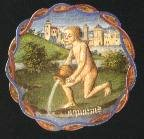
Il y a deux sortes de vaisseaux, dans lesquels les Philosophes font cuire leur ouvrage : l'un est le vaisseau de la nature, l'autre celui de l'art. Le vaisseau naturel, que l'on appelle aussi vaisseau philosophique, est la terre même de la pierre, qui est comme la femelle et la matrice où est reçue la semence du mâle, où elle se putréfie, et où elle reçoit la préparation pour la génération. Quant aux vaisseaux artificiels il en est de trois sortes, puisque le secret se cuit dans autant de vaisseaux. [Dom Pernety consacre dans ses Fables un chapitre sur le vase de l'Art et de celui de la Nature, et d'abord des matrices de la Nature :
« Trois sortes de matrices, la première es la terre ; la matrice universelle du monde, le réceptacle des éléments, le grand vase de la Nature, le lieu où se fait la corruption des semences ; le sépulcre et le tombeau vivant de toutes les créatures. Elle est en particulier la matrice du végétal et du minéral. La seconde matrice est celle de l'utérus, dans l'animal ; celle des volatiles est l'oeuf, et le seul rocher, celle de l'or et de l'argent. La troisème, celle du métal est connue de peu de personnes, la matrice étant, avec le sperme, la cause de la spécification du métal ».
Puis, Pernety décrit les noms donnés à ce vase par les Anciens :
« Les philosophes faisaient en sorte de faire entrer ce vase dans leurs allégories, de manière qu'on n'eût pas le moindre soupçon sur l'idée qu'ils en avaient. Tantôt c'était une tour [Danaé], tantôt un navire [Argos], ici un coffre [Acrisios, le père de Danae, redoutant d'après un oracle, d'être tué par son petit-fils, lance Persée avec sa mère Danae sur la mer dans un coffre de bois. Ils arrivent sur une île et Persée y grandit et multiplie les exploits] , là une corbeille. Telle fut la tour de Danaé, le coffre de Deucalion, et le tombeau d'Osiris ; la corbeille, l'outre de Bacchus et sa bouteille ; l'amphore d'or ou vase de vulcain ; la coupe que Junon présenta à Thétis, le vaisseau de Jason, le marais de Lerne ; le panier d'Erichthonius ; la cassette dans laquellefut enfermée Tennis Triodite avec sa soeur Hémithée ; la chambre de Léda ; les oeufs d'où naquirent Castor, Pollux, Clytemnestre et Hélène ; la ville de Troye ; les cavernes des monstres ; les vases dont Vulcain fit présent à Jupiter. La cassette que Thétis donna à Achille, dans laquelle on mit les os de Patrocle, et ceux de son ami. La coupe avec laquelle Hercule passa la mer pour aller enlever les boeufs de Géryon. La caverne du mont Hélicon, qui servait de demeure aux Muses et à Phoebus [...] Le lit où Vénus fut trouvée avec Mars ; la peau dans laquelle Orion fut engendré ; le clepsydre ou corne d'Amalthée. Les Egyptiens enfin n'entendaient autre chose par leurs puits, leurs sépulcres, leurs urnes, leurs mausolées en forme de pyramide...» ]
110
Le premier vaisseau artificiel est fait d'une pierre transparente, ou d'un verre pétrifié. Quelques Philosophes en ont caché la forme et la figure sous une description énigmatique, en disant qu'il est composé tantôt de trois et tantôt de deux pièces, c'est-à-dire de l'alambic et de la cucurbite, et pour qu'il soit composé de trois, ils y ajoutent un couvercle. [cette pierre transparente, nous l'avons analysé dans plusieurs sections, a rapport avec le gypse ou le marbre statuaire]
111
Plusieurs auteurs ont inventé divers noms pour exprimer une multiplicité de vaisseaux qui seraient nécessaires à l'ouvrage philosophique, les appelant de différentes manières selon la diversité des opérations, afin de nous en dissimuler le secret. Car ils ont appelé les uns vaisseaux à dissoudre, les autres vaisseaux à putréfier, à distiller, à sublimer, à calciner, et autres dénominations semblables. [plusieurs textes parlent du fourneau, en particulier Batsdorff dans son Filet d'Ariadne]
112
Mais à en parler franchement et sans supercherie, un seul vaisseau artificiel suffit pour tirer et obtenir les deux sortes de soufre
[l'argile fournit le Soufre blanc et un soufre rouge. Philalèthe dit que :« ce vase est un aludel, non de verre, mais de terre ; il est le réceptacle des teintures ; et respectivement à la pierre, il doit contenir (la première année des Chaldéens) vingt quatre pleines mesures de Florence, ni plus ni moins »],
et un pour l'élixir : car la diversité des digestions ne réclame pas une diversité de vaisseaux. Il faut même prendre bien garde que l'on ne change ou que l'on n'ouvre les vaisseaux jusqu'à la fin du premier ouvrage.
113
II faut que la forme du vaisseau de verre soit ronde dans la cucurbite, ou bien ovale. Il faut que son col soit haut au moins d'une paume, ou davantage ; qu'il soit assez large au commencement, mais qu'il aille en se rétrécissant vers l'ouverture, à la manière d'une fiole. Il faut qu'il ne comporte point d'aspérité ou d'inégalité, mais qu'il soit partout d'une épaisseur égale, afin de pouvoir résister à un feu long et aigu. La cucurbite s'appelle borgne parce qu'on la bouche et qu'on la lute exactement sur son pourtour avec le sceau hermétique, de peur que rien d'étranger n'y entre, ou que l'esprit ne s'en échappe. [il n'est pas possible que cette description corresponde à un ouvrage de verre « réel ». Qu'il en ait les apparences, soit. Mais les substances qui participent à la préparation de ce verre doivent être bien spéciales ou alors, s'accompagner de conditions de température telles que c'est autre chose que du verre que l'on souhaite préparer.]
114
II faut que le second vaisseau artificiel soit de bois, fait d'un tronc de chêne coupé en deux hémisphères concaves, [Fig. Hiér.] où il faut fomenter l'œuf des Philosophes jusqu'à ce qu'il produise son poussin : voyez à ce sujet la Fontaine du Trévisan. [Ici, nous dirons tout net que ce vaisseau nous est connu : c'est « l'astragale » hermétique, qui, évidemment, n'a nul rapport avec l'os qui unit le calcanéum avec les deux malléoles. Nous y verrions plutôt la matière qui fournit une sorte de gomme adragante. Mais ce n'est pas de celle-là qu'il s'agit non plus...L'énigme s'avère difficile à résoudre !]
115
Les praticiens ont appelé leur fourneau le troisième vaisseau, parce qu'il contient les autres vaisseaux, où est toute la matière de leur œuvre. Les philosophes ont aussi tâché de nous en dissimuler le mystère et le secret. [il s'agit du vaisseau de nature, qui tient donc du verre et du soufre -]
116
L'Athanor. [c'est du fourneau philosophique qu'il est ici question ; qu'on ne s'attende donc pas à trouver décrit un fourneau classique. Dom Pernety nous dit :
« qu'il est absolument nécessaire de connaître le vase et sa forme pour réussir dans l'oeuvre. quant à celui de l'art, i doit être de verre, de forme ovale ; mais pour celui de la nature, les philosophes nous disent qu'il faut être instruit parfaitement de sa quantité et de sa qualité. C'est la terre de la pierre, ou la femelle, ou la matrice dans laquelle la semence du mâle est reçue, se putréfie et se dispose à la génération. Morien parle de celui-ci en ces termes :
« Vous devez savoir, ô bon roi, que ce magistère est le secret des secrets de Dieu très grand ; il l'a confié et recommandé à ses Prophètes, dont il a mis les âmes au paradis. Que si les sages, leurs successeurs, n'eussent compris ce qu'ils avaient dit de la qualité du vaisseau dans lequel se fait le magistère, ils n'auraient jamais pu faire l'oeuvre. »]
Ce fourneau, qui est le gardien et le dépositaire de tous les mystères de l'ouvrage, a été appelé athanor ou immortel, à cause du feu perpétuel qu'il conserve. Car c'est en lui qu'on entretient un feu continuel, quoique parfois inégal, pour le régime de l'ouvrage. Il faut en effet que ce feu soit tantôt plus grand et tantôt plus petit, selon la quantité de la matière et la capacité du fourneau.
117
La matière du fourneau se fait de brique cuite, ou d'une terre grasse comme l'argile, parfaitement broyée, et préparée avec du fumier de cheval où on mêlera du crin, afin qu'elle n'éclate ni ne se fende sous l'effet d'une longue chaleur. Les murailles latérales de ce fourneau doivent être de l'épaisseur de trois ou quatre doigts, afin qu'ils puissent retenir la chaleur, et aussi mieux lui résister.
118
La forme du fourneau doit être ronde, et sa hauteur intérieure de deux pieds environ. On doit placer au milieu une lame de fer ou d'airain [amalgame philosophique], également ronde, de l'épaisseur du dos d'un couteau, qui occupe presque la largeur intérieure du fourneau. Néanmoins elle doit être un peu plus étroite, et n'en doit point toucher les murailles, mais être appuyée sur trois ou quatre broches de fer jointes aux murailles. Il faut aussi qu'elle soit toute trouée à l'entour, afin que la chaleur passe à travers, et entre les flancs du fourneau et les bords de cette grille. Et il faut pratiquer dans les flancs, tant au-dessous qu'au-dessus de la grille, de petites portes, afin de pouvoir allumer le feu par celle d'en bas, et connaître la température de la chaleur par celle du dessus. A l'opposite de celle-ci, il faut faire une petite fenêtre de forme rhomboïde, garnie d'un verre, afin qu'en y approchant l'œil, on puisse apercevoir les couleurs que la lumière placée en face fera apercevoir. Que l'on mette sur le milieu de cette grille un trépied portant le vaisseau. Enfin il faut entièrement couvrir et boucher le fourneau, en bâtissant attenant autour de ses flancs, une voûte faite de la même matière de brique cuite : il faut aussi clore fort bien la petite porte du dessus, de peur que la chaleur ne s'exhale.
119
Tu as là tout ce qui est nécessaire au premier ouvrage, dont la fin est la génération des deux soufres. Voici comment tu parviendras à leur composition et à leur perfection.
(Règle.) Prends un Dragon roux, généreux et belliqueux, ayant toute sa force native. Prends ensuite sept ou neuf aigles généreuses et vierges, dont la vivacité du regard ne s'émousse point aux rayons du Soleil. Place ces oiseaux avec le Dragon dans une prison claire et bien fermée, sous laquelle il faut allumer le bain, afin qu'ils soient excités au combat par cette tiède vapeur. Et bientôt ils se livreront une longue et rude bataille, jusqu'à ce que, vers le quarantième jour, les aigles commencent à déchirer la bête, laquelle en mourant souillera toute la prison d'une bave noire et venimeuse, dont les aigles, étant contaminées, seront contraintes de mourir. De la putréfaction de ces cadavres, il s'engendrera un corbeau, qui petit à petit dressera la tête, et, la chaleur du bain une fois augmentée, commencera à étendre ses ailes et à voler : il rôdera longtemps pour tâcher de trouver quelque faîte, grâce aux vents et aux nuages qui s'y soulèveront, mais prends bien garde qu'il n'en trouve pas. Enfin, blanchi par une pluie lente et longue et par la rosée du ciel, il se changera en cygne étincelant (de blancheur). Que la naissance du Corbeau soit pour toi la preuve de la mort du Dragon. En blanchissant le corbeau, tires-en les éléments, et distille-les selon la forme dans l'ordre prescrit, jusqu'à ce qu'ils soient fixes dans leur terre, et deviennent une sorte de poussière très blanche, très subtile, et très déliée. Ceci fait, tu posséderas ce que tu désires, en ce qui regarde l'œuvre au blanc. [il y a là de quoi écrire un traité entier. L'Aigle - aetoV - définit le faîte d'un toit. C'est-à-dire le sommet d'une montagne. Il ne fait donc pas de doute quant à ce que représentent ces rapaces. Un état dissolu et corrompu. Peut-on mieux définir des oxydes ? ]
120
Si, passant outre, tu veux obtenir l'œuvre au rouge, ajoutes-y l'élément du feu, qui manque à l'œuvre au blanc, sans remuer aucunement le vaisseau, et, le feu étant peu à peu renforcé par ses points, presse la matière jusqu'à ce que ce qui était caché devienne manifeste. Un indice en est quand la couleur citrine commence à apparaître. Réagis le feu du quatrième degré par ses points, jusqu'à ce qu'avec l'aide de Vulcain il naisse du Lys des roses empourprées, et enfin l'amarante teinte d'une sombre rougeur de sang. Mais ne cesse point de réveiller le feu par le feu, jusqu'à tant que tu voies la matière s'achever en des cendres très rouges et impalpables. Que cette pierre rouge exalte ton esprit à continuer encore plus loin, sous les auspices de la Sainte Trinité. [il y a là matière à réflexion : comment, en effet, ne pas voir dans l'oeuvre au blanc où le FEU ne serait point présent, autre chose qu'un SEL pur sans SOUFRE, autrement dit l'écrin vide de la Pierre ? Il s'agirait alors d'une matière fort commune et très utilisée, d'une grande dureté : de l'émeri ou ce que Buffon nomme la pierre émeril. Dès lors, l'obtention de l'oeuvre au rouge consisterait, tout uniment, à infuser ce FEU qui manque, autrement dit, cet oxyde évoqué dans le cap. 119 et qui transforme l'émeri le plus sordide en rubis le plus pur. La Sainte Trinité évoque un ouvrage, congénère de l'Aurora Consurgens en ce qu'il contient de superbes enluminures du XVe siècle.]
121
L'Elixir.
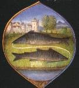
Ceux qui ignorent les secrets de la Nature et de l'Art, croyant qu'ils ont mené leur ouvrage jusqu'au bout et ont accompli tous les préceptes du secret, lorsqu'ils ont trouvé le soufre, se trompent fort. En vain tenteront-ils la projection : car la pratique de la Pierre ne peut être achevée que par deux opérations, dont la première est la création du soufre ; mais la seconde, c'est la confection de l'élixir. [Dom Pernéty consacre un chapitre de ses Fables à l'Elixir :
« Ce n'est pas assez d'être parvenu au soufre philosophique que nous venons de décrire ; la plupart y ont été trompés, et ont abandonné l'oeuvre dans cet état-là, croyant l'avoir poussé à sa perfection. L'ignorance de la Nature et de l'Art sont la cause de cette erreur. En vain voudrait-on tenter de faire la projection avec ce soufre. La pierre philosophale ne peut être parfaite qu'à la fin du second oeuvre qu'on appelle Elixir. [...] L'élixir, suivant D'Espagnet, est composé d'une matière triple ; savoir d'une eau métallique, ou du mercure sublimé philosophiquement, du ferment blanc, si l'on veut faire l'élixir au blanc, ou du ferment rouge pour l'élixir au rouge, et enfin du second soufre ; le tout selon les poids et proportions philosophiques. L'élixir doit avoir cinq qualités ; il doit être fusible, permanent, pénétrant, tingeant et multipliant ; il tire sa teinture et sa fixation du ferment ; sa fusibilité de l'argent-vif, qui sert de moyen pour réunir les teintures du ferment et du soufre ; et la propriété multiplicative lui vient de l'esprit de la quintessence qu'il a naturellement. »
Il nous faut faire ici un effort de réflexion. il y a, selon nous, un contre-sens dans la définition de l'élixir qui est donné par Dom Pernety. L'élixir correspond au Compost philosophal et il en a toutes les propriétés comme nous allons le voir. D'abord, l'eau métallique : c'est un bain d'oxydes dissous ou pour employer la terminologie de l'époque, des chaux métalliques ; le premier degré à atteindre consiste en leur dissolution totale, signifiée par la putréfaction : c'est le régime de Saturne. Le ferment blanc ne saurait être que la Toyson d'or de Trismosin, c'est-à-dire le Soufre blanc qui correspond à la terre de Chio ou terre de Samos. Quant au second soufre, il s'agit du principe teingeant qui va déterminer l'orientation de la pierre. Les qualités requises sont celles d'un fondant qui résiste à l'ardeur du feu et quant aux propriétés de multiplication, il faut y voir un accroissement. La quintessence a été étudiée par M. Berthelot [Introduction Chimie des Anciens]. elle doit être rapportée à ioV, qui signifie plus particulièrement la rouille ou oxyde des métaux, ainsi que le venin du serpent, parfois assimilé à la rouille dans le langage symbolique des alchimistes. La pointe de la flèche est le symbole de la quintessence, l'extrait doué de propriétés spécifiques : c'est le principe des colorations métalliques, de la coloration jaune en particulier -il s'agit d'une couleur qui survient après le régime de Jupiter dont on rappelle qu'il est de couleur grise selon les vues de Pernety. Le mot IwsiV a la même signification : la coloration en jaune ou en violet des composés métalliques, coloration produite souvent par certaines oxydations. Dom Pernety nous dit ceci de la quintessence :
« La quintessence est une extraction de la plus spiritueuse et radicale substance de la matière ; elle se fait par la séparation des éléments qui se terminent en une céleste et incorruptible essence dégagée de toutes les hétérogénéités. Aristote la nomme une substance très pure, incorporée en certaine matière non mélangée d'accidents. Héraclite l'appelle une essence céleste, qui prend le nom du lieu d'où elle tire son origine. Paracelse la dit, l'être de notre ciel centrique [il s'agit alors du radical métallique du soleil] ; Pline, une essence corporelle, séparée néanmoins de toute matérialité, et dégagée du commerce de la matière. Elle a été nommée en conséquence un corps spirituel, ou un esprit spirituel, fait d'une substance éthérée. Toutes ces qualités lui ont fait donner le nom de quintessence, c'est-à-dire une cinquième substance, qui résulte de l'union des parties les plus pures des éléments. [...] »
Il faut bien voir qu'il s'agit d'un état de la matière qui devait sembler singulier aux alchimistes : une substance qui n'était ni eau, ni terre, ni feu ni air mais qui tenait à la fois des quatre principes tout en ayant sa spécificité. Le secret philosophique consistait à tenir son feu selon des proportions que les uns définissaient comme clibaniques [Fig. Hiér.] ou géométriques [Artephius]. Le Trévisan [Verbum] conseillait de donner un feu lent et faible plutôt que fort au risque, sinon, de brûler les fleurs. Dom Pernety poursuit :
« Cette difficulté n'est pas cependant si grande qu'elle le paraît d'abord à la première lecture des philosophes ; quelques-uns nous avertissent [Verbum] que la Nature a toujours la balance à la main pour peser ces éléments, et en faire ses mélanges tellement proportionnés, qu'il en résulte toujours les mixtes qu'elle se propose de faire, à moins qu'elle ne soit empêchée dans ses opérations parle défaut de la matrice où elle fait ses opérations, ou par celui des semences qu'on lui fournit, ou enfin par d'autres accidents...»]
122
Le soufre des Philosophes est une terre très subtile, très chaude et très sèche, dans la racine et le centre de laquelle le feu naturel se cache et se multiplie merveilleusement. C'est pour cette raison qu'on a appelé ce soufre ou cette terre le feu de la pierre. Car il a en lui la vertu d'ouvrir et de pénétrer les corps des métaux, et de les convertir en son tempérament, et de produire son semblable : de là vient qu'il est pris pour le Père, et la semence masculine.
123
Afin que nous ne laissions rien en arrière sans en parler, qu'on sache que de ce premier soufre, il s'en engendre un second, et qu'il se multiplie ainsi jusqu'à la fin. Que le sage garde donc bien cette mine éternelle de feu céleste : car de la même matière dont s'engendre le soufre, il se multiplie aussi avec la même, en ajoutant une petite portion du soufre susdit dans la matière que l'on veut multiplier, à condition toutefois que cela se fasse avec pondération et mesure. Qu'on aille lire le reste dans Lulle, et qu'il suffise ici de l'avoir indiqué. [sur la mine éternelle, cf. Chimie des Anciens. Elle rappelle la masse inépuisable des Papyrus de Leide ou la pilule éternelle qu'on obtenait avec de l'antimoine. ]
124
L'élixir se compose de trois sortes de matière, à savoir une eau métallique, ou un mercure sublimé, ainsi qu'il a été dit, un ferment blanc ou rouge selon l'intention de l'opérateur, et de la matière du deuxième soufre, le tout pris avec pondération et mesure. [le terme d'élixir a été cause de beaucoup de dupes. On a même été jusqu'à y voir l'élixir de longue vie. Ce qui, dans un certain sens, était bien vu, mais uniquement dans l'optique du système. C'était pointer par là le rôle du Mercure ou Eau permanente. D'où l'expression « longue vie ». L'eau métallique représente le Compost - Mixte Rebis-premier Mercure ; le second Soufre ne peut être que la teinture de la Pierre -]
125
Dans l'élixir parfait se rencontrent cinq qualités particulières et nécessaires, qui sont d'être fusible, permanent, pénétrant, teignant et (se) multipliant. Il emprunte la qualité de teindre et de fixer au ferment, celle de pénétrer au soufre, celle d'être fusible au vif-argent, qui est un milieu par lequel les teintures, à savoir celles du ferment et celles du soufre, se joignent et s'unissent. Quant à la vertu de multiplier, elle lui est versée et communiquée par l'Esprit de la quintessence. [c'est la vertu de minéralisation qui est ainsi rendue, en cette rhétorique a priori si singulière : cet élixir, on l'a déjà vu, n'est autre que le COMPOST: il est constitué du Mercure - fondant alcalin, fluide et dont le destin est de se volatiliser - très lentement, ce qui la condition sine qua non de la multiplication ou si l'on préfère et ce qui est dit de façon plus charitable, de l'accroissement ou de l'augmentation. C'est donc, comme l'avait bien vu Chevreul, un ferment au sens où ce fondant est capable de produire une véritable germination minérale : il s'agit de la Pierre.]
126
Les deux métaux parfaits donnent aussi une teinture parfaite, parce qu'ils sont teints du pur soufre de la nature. Qu'on ne cherche donc point d'autres ferments des métaux ailleurs qu'en ces deux corps. Teins donc ton élixir blanc et rouge avec la Lune et le Soleil, car le mercure en reçoit le premier la teinture, et l'ayant reçue, la communique.
127
En composant l'élixir, prends garde de ne pas confondre les ferments, et de ne pas les mêler l'un pour l'autre, car chaque élixir veut être avec son ferment spécial et particulier, et avec ses propres éléments. Car naturellement les deux luminaires ont leur soufre différent, et leurs teintures distinctes. [il s'agit des soufres BLANC et ROUGE ; le soufre blanc est formé du sel d'un métal qui tient le milieu entre l'or et l'argent pour ses qualités formelles. Quant au soufre rouge, c'est un corps métallique qui constitue la forme même du serpent, cf Mercure de Nature.]
128
Le second ouvrage se cuit dans un vaisseau pareil ou identique, dans le même fourneau, et avec les mêmes degrés de feu que le premier, mais il s'achève en bien moins de temps que le premier.
129
II y a trois humeurs dans la pierre, qu'il faut extraire successivement : à savoir l'aqueuse, l'aérienne et la radicale. Tout le soin et tout le travail de l'opérateur concernent l'humeur, et dans l'ouvrage de la pierre, il ne circule pas d'autre élément : car il faut avant toute chose que la terre soit résolue en humeur, et qu'elle se liquéfie. Quant à l'humeur radicale, qui passe pour un feu, elle est la plus gluante et la plus opiniâtre de toutes, parce qu'elle est comme ligotée, au centre de la Nature et de la substance, dont elle ne se sépare pas facilement. Tire donc ces trois humeurs par leurs roues, peu à peu et successivement, par dissolution et congélation. Par la réitération de la dissolution et la congélation, alternative et successive, s'accomplit en effet la roue étendue (cf. ci-dessus, ch. 83) et s'achève tout l'Œuvre.
130
La perfection de l'élixir consiste en l'union étroite et le mariage indissoluble du sec et de l'humide, de sorte qu'ils ne se séparent jamais : si bien qu'il faut que le sec s'écoule en une matière humide par la moindre chaleur, et devenue inaltérable à toutes les violences du feu. C'est une marque de sa perfection si, en en jetant tant soit peu sur une lame de fer ou d'airain chauffée au rouge, il y coule sans fumer.
131
[Ici, Dom Pernety a mis - dans l'extrait qu'il donne de l'Arcanum . . . Opus dans ses Fables Egyptiennes et Grecques, t. I, le symbole de Jupiter qui précède le texte]. Prends trois livres de terre rouge, ou ferment rouge, d'eau et d'air, autant de l'un que de l'autre le double, mêle bien et broie toutes ces choses, les réduisant en un amalgame qui devienne comme du beurre, ou comme une pâte métallique de sorte que la terre soit tellement ramollie qu'elle ne se sente pas sous les doigts. Ajoutes-y une livre et demie de feu, et fais digérer ces choses dans leur vaisseau bien bouché par un feu de premier degré, autant qu'il est nécessaire. Il faut ensuite tirer les éléments avec ordre chacun par leurs degrés de feu, lesquels par un mouvement lent seront enfin digérés et fixés dans leur terre, en sorte que rien de volatil ne pourra s'en échapper. Enfin la matière deviendra comme une roche claire, rouge et diaphane, dont tu prendras à plaisir une partie que, jetée dans un creuset sur un feu lent, tu abreuveras goutte à goutte de son huile rouge, jusqu'à ce qu'elle fonde entièrement et s'écoule, sans fumer [cette opération ressemble fort à celle de l'alkali fixe à section salpêtre]. Ne crains pas qu'elle s'enfuie, car la terre, ramollie par ce doux breuvage, la retiendra dans ses entrailles. Et alors garde et retiens bien chez toi cet élixir parfait, réjouis-toi en Dieu, et sois discret.
132
Dans le même ordre et par la même méthode, on fait l'élixir blanc, pourvu qu'on se serve seulement dans sa composition des éléments blancs. Car son corps étant cuit et achevé, deviendra pareillement comme une roche blanche, resplendissante et pareille au cristal, qui, étant abreuvée et imprégnée de son huile blanche, deviendra fusible. Jette de l'un et de l'autre élixir une livre sur dix de vif-argent lavé, et tu en admireras l'effet.
133
Comme dans l'élixir les forces du feu naturel sont multipliées et redoublées merveilleusement, à cause de l'esprit de la quintessence qui y est insufflé, et que les accidents vicieux et adhérant aux corps, qui en ternissaient la pureté, enveloppant ainsi dans les ténèbres la vraie lumière de la Nature, en sont bannis par de longues et diverses sublimations et digestions. C'est pour cela que le feu naturel y étant comme dégagé de ses liens, et aidé du secours des forces célestes, agit très puissamment, renfermé qu'il est dans le cinquième élément. Qu'on ne trouve donc pas étrange s'il possède la vertu, non seulement de perfectionner les choses imparfaites, mais encore s'il a la faculté de se multiplier et de se perfectionner lui-même. Or la source de la multiplication est dans le Prince des luminaires, qui par la multiplicité infinie de ses rayons, engendre toutes choses en ce monde, et les ayant engendrées les multiplie, en versant dans leurs semences une vertu multipliante.
134
La méthode et la voie de multiplier l'élixir est triple. Pour la première prends une livre de l'élixir rouge, que tu mêleras dans neuf de son eau rouge, et mets-le tout à dissoudre dans un vaisseau approprié. Cette matière étant parfaitement dissoute et mêlée, coagule-la en la cuisant par un feu lent, jusqu'à ce qu'elle devienne ferme et semblable à un rubis ou à une lame (métallique) rouge, qu'il faut alors abreuver d'huile rouge de la manière susdite, jusqu'à ce qu'elle s'écoule. Ainsi tu obtiendras une médecine dix fois plus forte que la première, et qui pourtant se fait facilement, et en peu de temps.
135
Pour la seconde façon, prends une portion de ton élixir à volonté, mélange-la avec son eau en observant le poids et la proportion et place-la dans un vaisseau de réduction bien bouché, et dissous-la dans le bain par inhumation. Une fois qu'elle est dissoute, distille-la en séparant les éléments l'un après l'autre par leur propre feu, en faisant qu'ils se fixent à la fin comme dans le premier et le second ouvrage, — jusqu'à ce qu'elle se pétrifie. Abreuve-la d'huile alors, et projette. Cette voie est la plus longue mais la plus riche, car la vertu de l'élixir croît au centuple, vu que plus il devient subtil par opérations réitérées, plus il reçoit de forces et de vertus célestes et inférieures, et opère plus puissamment.
136
Pour la troisième manière, prends une once de l'élixir dont les vertus ont été ainsi multipliées, et jette-la sur cent de mercure lavé. En peu de temps, le mercure échauffé sur la braise se changera en un pur élixir dont, si tu jettes de même une once sur cent autres du même mercure, un Soleil très pur en naîtra aussitôt. La multiplication de l'élixir blanc doit se faire de la même manière. Cherche d'autre part les vertus de cette médecine pour guérir toutes les maladies et conserver la santé, ainsi que ses autres usages, dans Arnaud de Villeneuve, Raymond Lulle et autres Philosophes.
137
Le Zodiaque des Philosophes t'enseignera à chercher les époques de la Pierre. Car la première opération, et le régime pour obtenir le blanc, doit se commencer dans la maison de la Lune [Cancer], et la seconde se terminer dans la seconde maison de Mercure [Vierge]. Mais la première opération pour parvenir au rouge se commence dans la seconde maison de Vénus [Balance], et la dernière se termine au second tribunal royal de Jupiter [Poissons], de qui notre Roi très puissant recevra une couronne tressée de très précieux rubis. C'est ainsi que l'année, repassant sur ses propres traces, recommence ses révolutions. [dans la section sur la prima materia, nous parlons du zodiaque alchimique ; en employant le triangle de feu de Calid, on obtient trois des signes qui sont cités ici]
138
Un Dragon à trois têtes garde cette Toison d'or. La première tête est issue des eaux, la seconde de la terre, la troisième de l'air. Néanmoins il faut que ces trois têtes n'en forment qu'une très puissante, qui dévorera tous les autres Dragons, et alors le chemin te sera frayé pour accéder à la Toison d'or. Adieu, lecteur studieux ! En lisant ce qui précède, invoque l'Esprit de la lumière éternelle, parle peu, raisonne beaucoup, et juge droitement.